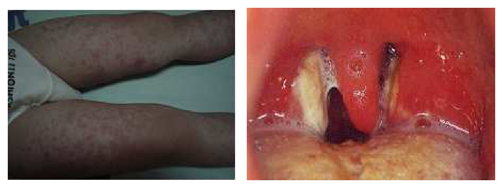
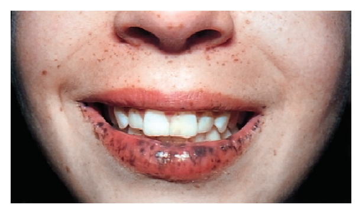
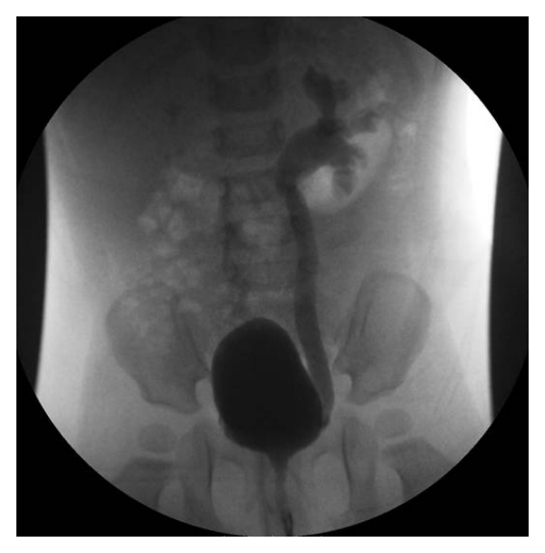
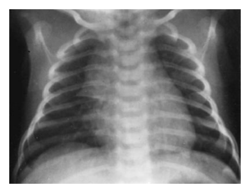
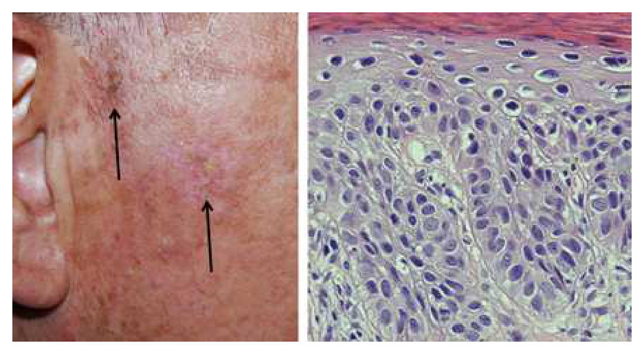
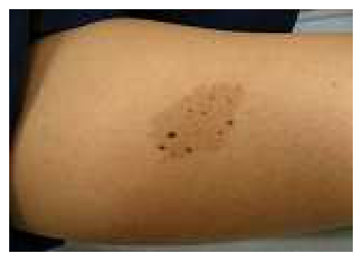
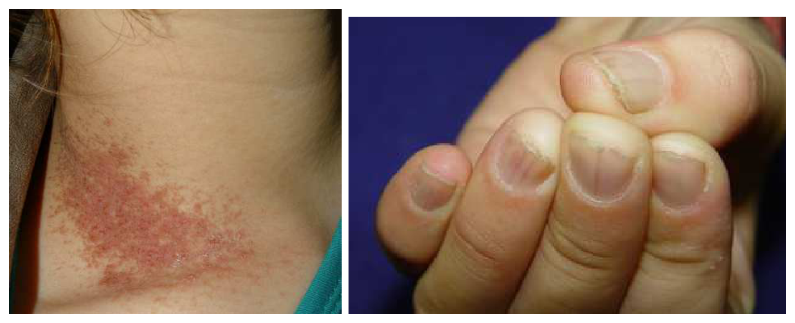
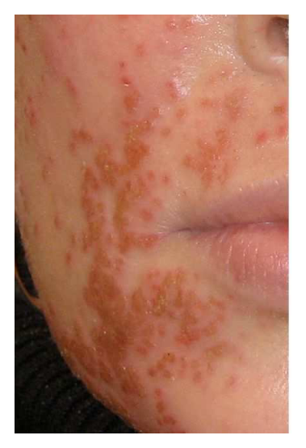
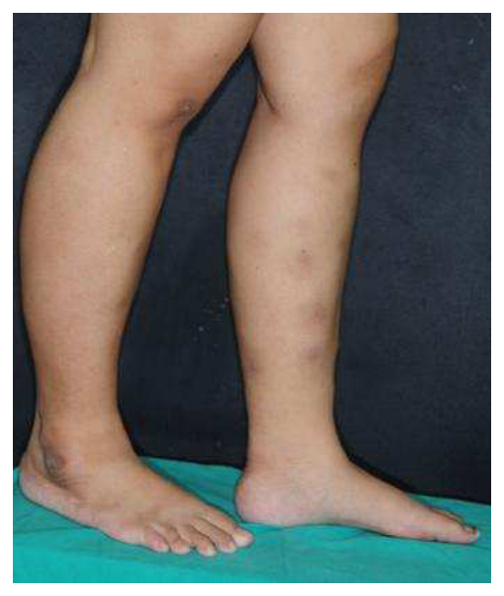
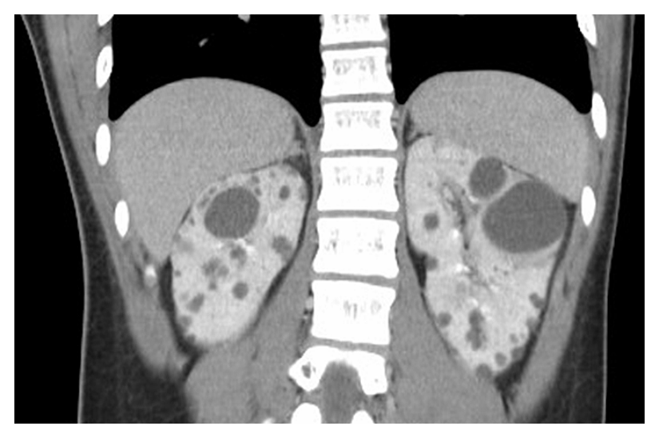

開卷有益 ／
醫師 ／ 醫學（四）（包括小兒科、皮膚科、神經科、精神科等科目及其相關臨床實例與醫學倫理） ／ 105 年第 1 次105 年第 1 次醫師醫學（四）（包括小兒科、皮膚科、神經科、精神科等科目及其相關臨床實例與醫學倫理）試題與答案
這一頁是民國 105 年第 1 次醫師醫學（四）（包括小兒科、皮膚科、神經科、精神科等科目及其相關臨床實例與醫學倫理）的整份歷屆試題，共 80 題，題目與標準答案出自考選部「國家考試試題及測驗式試題答案」開放資料，其中 80 題附有詳解。以下逐題列出題幹、選項與答案；要計時作答或記錄成績，請用線上練習。
考選部原始場次代碼：105020
線上作答這一科 →
全部 80 題
第 1 題
一位4歲女童，因高燒5天及喉嚨疼痛就醫，給予ampicillin後出現如圖一所示的全身皮疹，同時發現其有眼皮浮腫和如圖二的扁桃腺變化。最可能的致病原為何？圖一 圖二

（A） 腸病毒（enterovirus）（B） EB病毒（Epstein-Barr virus）（C） 麻疹病毒（measles virus）（D） 德國麻疹病毒（rubella virus）答案：（B）
詳解與考點 正解：女童高燒、咽喉痛、眼皮浮腫及圖二可見的扁桃腺紅腫伴白色滲出物，符合傳染性單核球增多症（infectious mononucleosis）的表現；在誤用 ampicillin 後出現圖一所示四肢瀰漫性紅色斑丘疹，更是 EB 病毒感染的典型誘答線索。EB 病毒可造成發燒、滲出性扁桃腺炎與眼瞼水腫，故選 B。
A：腸病毒可引起疱疹性咽峽炎或手足口病，常見口腔後部小水泡、潰瘍及手足臀部疹；但圖中的四肢瀰漫性皮疹是在使用 ampicillin 後出現，且合併眼瞼水腫與滲出性扁桃腺炎，較不符合腸病毒感染。
C：麻疹病毒可有高燒、咳嗽、流鼻水、結膜炎及由臉部向下擴散的斑丘疹，口腔可見 Koplik spots；然而本題的皮疹與 ampicillin 使用有明確時間關聯，並以滲出性扁桃腺炎及眼皮浮腫為主，較支持 EB 病毒。
D：德國麻疹病毒通常造成較輕微發燒、細緻粉紅色皮疹與耳後、枕部淋巴結腫大，咽喉炎多不呈現明顯扁桃腺白色滲出物；也沒有 ampicillin 後出現廣泛皮疹這項典型關聯。
本題考點：傳染性單核球增多症（infectious mononucleosis）常由 EB 病毒（Epstein-Barr virus）引起，表現包括發燒、咽喉炎、滲出性扁桃腺炎及眼瞼水腫；EB 病毒感染者接受 aminopenicillin，如 ampicillin，後容易出現瀰漫性斑丘疹。
第 2 題
下列何種情況不屬於腸病毒重症的特徵？
（A） 發病超過7天（B） 出現類似驚嚇的全身性肢體抽動伴有心跳快或血壓高（C） 年齡小於5歲（D） 持續嘔吐本題送分，無標準答案
詳解與考點 本題經考選部公告一律給分。腸病毒重症警示徵象教材列有「發病未超過7天即快速惡化」為典型特徵，(A)「發病超過7天」與此相反，理應為明確之「不屬於」重症特徵、應為正解；惟(C)「年齡小於5歲」僅為好發族群之流行病學傾向而非重症「特徵」本身（重症亦可見於年長兒童），是否屬於「特徵」之定義存在解讀分歧，致(A)(C)何者為正解出現爭議。(B)類驚嚇肢體抽動合併自律神經異常（心跳快、血壓高）與(D)持續嘔吐皆為教材明確列出之重症警示徵象。作答以現行兒科感染學教材腸病毒重症分級標準為準。
第 3 題
核黃疸（kernicterus）的定義是指間接型膽紅素（unconjugated bilirubin）沈積在下列何處？
（A） 腦膜（B） 基底核（C） 小腦（D） 腦室旁答案：（B）
詳解與考點 正解：核黃疸的病理定義。未結合型膽紅素可穿越尚未成熟或受損的血腦障壁，沉積並傷害基底核，尤其常累及蒼白球，形成核黃疸（kernicterus），故選 B。
A：腦膜不是核黃疸的典型膽紅素沉積部位；膽紅素腦病變主要傷害深部灰質核團。
C：小腦可在嚴重膽紅素腦病變中受影響，但非核黃疸定義上最具代表性的沉積部位。
D：腦室旁白質病變較常聯想到早產兒的腦室周圍白質軟化，並非未結合型膽紅素沉積的典型位置。
本題考點：核黃疸（kernicterus）；未結合型膽紅素（unconjugated bilirubin）的神經毒性；基底核（basal ganglia）受損。
第 4 題
新生兒比大人更容易散失熱量，其原因是：
（A） 心跳、呼吸速率較快（B） 體表面積與體重比值較高（C） 棕色脂肪代謝率較快（D） 血液甲狀腺素較高答案：（B）
詳解與考點 正解：新生兒相對於體重有較大的散熱面積。熱量經皮膚以輻射、對流、傳導與蒸發散失，體表面積與體重比值越高，每單位體重暴露的散熱面積越大；新生兒因此較容易失熱，故選 B。
A：心跳與呼吸較快反映較高代謝需求，不能直接解釋新生兒為何較容易經體表散熱。
C：棕色脂肪是新生兒非顫抖性產熱（non-shivering thermogenesis）的來源，是代償失熱的機制，而非造成失熱的原因。
D：甲狀腺素參與代謝與產熱調節，但不是新生兒相較成人散熱較快的主要解剖生理原因。
本題考點：體表面積／體重比（surface area-to-body weight ratio）；新生兒體溫調節（thermoregulation）；非顫抖性產熱（non-shivering thermogenesis）。
第 5 題
下列何者不是造成新生兒先天性感染之重要病原體？
（A） 巨細胞病毒（B） 梅毒螺旋體（C） 弓蟲症（D） 麻疹病毒答案：（D）
詳解與考點 正解：可經胎盤或周產期垂直傳播、造成典型先天性感染的病原體。巨細胞病毒、梅毒螺旋體與弓蟲皆是重要先天性感染病原；麻疹病毒並非典型先天性感染群中的重要病原體，故選 D。
A：巨細胞病毒（cytomegalovirus）是常見先天性感染病原，可造成聽力損失及中樞神經系統病變。
B：梅毒螺旋體（Treponema pallidum）可經胎盤感染胎兒，造成先天性梅毒，故是重要病原。
C：弓蟲（Toxoplasma gondii）可經母體初次感染後垂直傳播，為先天性感染的重要鑑別。
本題考點：先天性感染（congenital infection）；垂直傳播（vertical transmission）；巨細胞病毒、梅毒與弓蟲感染的鑑別。
第 6 題
下列有關新生兒暫時性呼吸急促（transient tachypnea of newborn）胸部X光變化，何者錯誤？
（A） 肺門的浸潤增加（B） 常常可見到minor fissure（C） 胸部X光的不正常影像，常可持續4天以上（D） 偶爾可見到少量的肋膜積液答案：（C）
詳解與考點 正解：新生兒暫時性呼吸急促由肺液清除延遲所致，其影像異常應迅速改善。胸部 X 光可見肺門血管陰影增加、葉間裂積液及偶有少量肋膜積液，但多在數天內消退；「常可持續4天以上」不符其暫時性的病程，故選 C。
A：肺液滯留會使肺門周圍血管與間質陰影較明顯，肺門浸潤增加是可見的影像表現。
B：液體可聚積於葉間裂，因此可見 minor fissure；它看似特殊，實則是肺液清除延遲的典型線索。
D：少量肋膜積液可伴隨肺液滯留，符合新生兒暫時性呼吸急促的可能 X 光所見。
本題考點：新生兒暫時性呼吸急促（transient tachypnea of newborn, TTN）；肺液清除延遲（delayed fetal lung fluid clearance）；胸部 X 光的葉間裂積液與短暫病程。
第 7 題
造成早發性（early-onset）新生兒感染的細菌中，最常見的格蘭氏陽性菌為：
（A） 金黃色葡萄球菌（B） B群鏈球菌（C） 肺炎雙球菌（D） 大腸桿菌答案：（B）
詳解與考點 正解：早發性新生兒感染最常見的格蘭氏陽性菌。早發性敗血症多由產道上行感染而來，B群鏈球菌（group B Streptococcus）是經典且最常見的格蘭氏陽性致病菌，故選 B。
A：金黃色葡萄球菌較常見於院內感染、導管相關感染或較晚發感染，並非早發性新生兒感染的最典型格蘭氏陽性菌。
C：肺炎雙球菌可造成新生兒感染但較少見，不能取代 B群鏈球菌的主要地位。
D：大腸桿菌是早發性新生兒感染的重要病原，尤其早產兒常見，但它是格蘭氏陰性菌，與題目所問的格蘭氏陽性菌不符。
本題考點：早發性新生兒敗血症（early-onset neonatal sepsis）；B群鏈球菌（group B Streptococcus）；垂直感染（vertical infection）。
第 8 題
有關營養素的吸收之敘述，下列何者錯誤？
（A） 蛋白質，須分解成胺基酸才能吸收（B） 麥芽糖，須分解成單醣才能吸收（C） 脂肪，須分解成單一脂肪酸才能吸收（D） 乳糖，分解成半乳糖及葡萄糖，才能吸收本題送分，無標準答案
詳解與考點 本題經考選部公告一律給分。(C)「脂肪須分解成單一脂肪酸才能吸收」與生理學不符，三酸甘油酯經脂解後主要生成單酸甘油酯與游離脂肪酸，二者皆可被吸收，並非僅單一脂肪酸形式，應屬錯誤；惟(A)「蛋白質須分解成胺基酸」亦有疑義，因小腸另可經由胜肽轉運蛋白吸收雙／三胜肽，非全部須分解至胺基酸，二者何者為題目所指「錯誤」認定分歧。(B)(D)雙醣須分解成單醣方能吸收，符合標準生理學敘述，可排除。作答以現行生理學營養素吸收機轉教材為準。
第 9 題
12歲男生，解血便前來求診。身體診察發現嘴唇有黑色斑點如下圖，最可能的疾病是：

（A） Peutz-Jeghers syndrome（B） familial polyposis coli（C） Gardner's disease（D） flat villous adenoma答案：（A）
詳解與考點 正解：12歲男生有血便，圖中可見下唇黏膜及口周有多發深褐至黑色色素斑，這是黏膜皮膚色素沉著（mucocutaneous pigmentation）的典型表現。合併兒童或青少年期的腸道出血，最符合 Peutz-Jeghers syndrome；此症為錯構瘤性息肉症候群（hamartomatous polyposis syndrome），常見小腸息肉造成腹痛、腸套疊或出血，並伴隨嘴唇、口腔黏膜與手指等部位色素斑，故選 A。
B：familial polyposis coli，即家族性腺瘤性息肉病（familial adenomatous polyposis, FAP），特徵是大腸及直腸出現大量腺瘤性息肉，雖可有血便且具大腸癌高風險，但不以圖示的口唇黏膜黑色色素斑為典型表現。
C：Gardner's disease 是家族性腺瘤性息肉病的腸外表現型，可合併骨瘤（osteoma）、表皮囊腫及纖維瘤等；其腸道息肉可造成出血，但口唇多發色素斑並非其代表性徵象，故不符。
D：flat villous adenoma 是扁平絨毛狀腺瘤，屬局部的大腸腺瘤性病灶，可造成黏液便、血便或惡性變化；它無法同時解釋圖中口唇與口周的多發黑色色素沉著，也不是兒童期這種症候群表現的典型診斷。
本題考點：Peutz-Jeghers syndrome——錯構瘤性息肉（hamartomatous polyp）合併黏膜皮膚色素沉著（mucocutaneous pigmentation）；家族性腺瘤性息肉病（familial adenomatous polyposis）與 Gardner syndrome 雖同有腸道息肉及腫瘤風險，但腸外特徵不同。
第 10 題
下列何者是兒童肥胖的最佳預測指標？
（A） 出生體重過重（B） 父母肥胖（C） 隔代教養（D） 單一子女答案：（B）
詳解與考點 正解：預測兒童持續肥胖時，家庭遺傳與共享生活環境的訊號最強。父母肥胖同時反映遺傳傾向、飲食模式、活動量與家庭環境，因此是兒童肥胖的最佳預測指標，故選 B。
A：出生體重過重與日後體重風險可能有關，但單一出生時點的資訊不如父母長期體型與家庭環境具有預測力。
C：隔代教養可能影響照顧與飲食型態，卻不是可獨立、穩定預測肥胖的最佳指標。
D：單一子女的家庭結構可能與生活型態相關，但缺乏父母肥胖所整合的遺傳及家庭暴露訊息。
本題考點：兒童肥胖（childhood obesity）的危險因子；家族史（family history）；共享環境（shared environment）。
第 11 題
一個8個月大的男童因第一次尿道感染住院，膀胱尿道攝影檢查（voidingcystourethrogram）顯示如附圖，你會如何給父母親建議？

（A） 接受外科手術治療（B） 建議接受局部玻尿酸注射治療（C） 建議使用抗生素預防感染（D） 建議只要觀察有無復發性感染，暫不需任何治療答案：（C）
詳解與考點 正解：膀胱尿道攝影可見顯影劑自膀胱逆流進入左側輸尿管，輸尿管擴張且迂曲，並上達腎盂腎盞，符合高級別膀胱輸尿管逆流（vesicoureteral reflux, VUR）。8個月大嬰兒首次尿道感染合併此類明顯逆流，初步以持續低劑量抗生素預防復發性尿路感染較合宜，並追蹤腎臟狀況與逆流是否改善，故選 C。
A：外科矯正通常保留給持續高級別逆流、在預防治療下仍反覆發燒性尿路感染、腎臟受損或追蹤未改善者；首次感染時不必立即接受手術。
B：內視鏡於輸尿管膀胱接合處注射填充物可作為部分 VUR 的治療選項，但不是本例首次感染合併高級別逆流的優先初始處置；應先以抗生素預防並追蹤。
D：單純觀察較適用於低級別、感染風險較低的逆流；圖中已有明顯輸尿管及腎盂腎盞擴張，若完全不作預防，發燒性尿路感染與腎臟瘢痕的風險較高。
本題考點：膀胱輸尿管逆流（vesicoureteral reflux, VUR）在排尿期膀胱尿道攝影可見顯影劑由膀胱逆流至輸尿管與腎臟；高級別 VUR 可見輸尿管擴張迂曲及腎盂腎盞擴張；嬰幼兒合併高級別逆流時，連續性抗生素預防（continuous antibiotic prophylaxis）用以降低復發性尿路感染風險。
第 12 題
下列何者最不可能造成高容積性低血鈉症（hypervolemic hyponatremia）？
（A） 低醛固酮血症（hypoaldosteronism）（B） 急性腎小管壞死（acute tubular necrosis）初期（C） 腎病症候群（nephrotic syndrome）（D） 鬱血性心臟病（congestive heart disease）答案：（A）
詳解與考點 正解：高容積性低血鈉症必須同時有總體水鈉增加與有效動脈血容積下降所致的水分滯留。急性腎小管壞死初期、腎病症候群與鬱血性心臟病都可有水分排除障礙或有效動脈血容積不足，造成水分滯留超過鈉而出現水腫性低血鈉；低醛固酮血症較傾向腎性鈉流失與低血容積，故最不可能，選 A。
B：急性腎小管壞死初期腎臟排鈉、排水功能受損，若攝水持續可導致體液增加與稀釋性低血鈉。
C：腎病症候群因低白蛋白血症造成水腫與有效動脈血容積下降，刺激水鈉滯留，屬高容積性低血鈉的典型情境。
D：鬱血性心臟病時心輸出量下降使有效動脈血容積降低，神經荷爾蒙活化造成水鈉滯留，常形成高容積性低血鈉。
本題考點：高容積性低血鈉症（hypervolemic hyponatremia）；有效動脈血容積（effective arterial blood volume）；醛固酮（aldosterone）與腎性鈉流失。
第 13 題
一位5歲的男童幾天前有呼吸道感染，這兩天出現眼皮浮腫，陰囊水腫。尿液檢查顯示尿蛋白>300 mg/dL，RBC 0～2/HPF，血中白蛋白1.9 gm/dL，醫師給予類固醇治療4週之後，再次檢測尿蛋白為陰性反應，下列何者最可能是男童的診斷？
（A） 微小變化型腎病變 （minimal change nephropathy）（B） IgA腎炎（IgA nephritis）（C） 局部巢狀絲球硬化（focal segmental glomerulosclerosis）（D） 膜性腎炎（membranous nephropathy）答案：（A）
詳解與考點 正解：5歲兒童出現水腫、大量蛋白尿、低白蛋白血症，且接受類固醇4週後蛋白尿轉陰。這是腎病症候群（nephrotic syndrome）且對類固醇高度反應的典型組合；兒童最常見的病理型態為微小變化型腎病變（minimal change nephropathy），故選 A。
B：IgA腎炎常在上呼吸道感染同期或不久後出現血尿，尿中紅血球通常較明顯；本題幾乎無血尿且呈現類固醇反應良好的腎病症候群，較不符。
C：局部巢狀絲球硬化可造成腎病症候群，但對類固醇反應較差且腎功能惡化風險較高；它看似也會大量蛋白尿，卻與本題快速完全緩解不合。
D：膜性腎炎可呈現腎病症候群，但在此年齡較不典型，也不像微小變化型腎病變般常有良好類固醇反應。
本題考點：腎病症候群（nephrotic syndrome）；微小變化型腎病變（minimal change nephropathy）；類固醇敏感性蛋白尿（steroid-sensitive proteinuria）。
第 14 題
出生體重低於1000公克的早產兒發生腦性麻痺（cerebral palsy）機率較高，是因為這類嬰兒較易有何種腦部病變發生？
（A） brain malformation（B） subdural hematoma（C） congenital meningitis（D） peri-ventricular leukomalacia答案：（D）
詳解與考點 正解：出生體重極低的早產兒容易發生缺血性白質損傷，進而增加腦性麻痺風險。早產兒腦室周圍白質血流調節脆弱，易發生腦室周圍白質軟化（periventricular leukomalacia），傷及下行運動路徑，故選 D。
A：腦部構造畸形可造成發展障礙或腦性麻痺，但不是極低出生體重早產兒最具代表性的後天腦部病變。
B：硬腦膜下血腫多與產傷或外傷有關，並非早產兒低出生體重最典型的腦性麻痺病理基礎。
C：先天性腦膜炎是感染性病因，不能解釋極低出生體重早產兒特有的高風險關聯。
本題考點：腦室周圍白質軟化（periventricular leukomalacia, PVL）；早產兒腦損傷（preterm brain injury）；腦性麻痺（cerebral palsy）。
第 15 題
2歲的男孩因不會講話而求診。他在1歲時可以放手走，現在會爬上下椅子。仍不會叫爸爸或媽媽，叫他不理人。有關其進一步的處置，下列何者敘述錯誤？
（A） 應安排發展聯合評估（B） 應排除聽力障礙，做聽力檢查（C） 可能為自閉症的表徵（D） 應做腦部磁振造影檢查答案：（D）
詳解與考點 正解：2歲仍無有意義語言、對叫名無反應，屬語言及社會溝通發展警訊。應先做發展聯合評估、聽力檢查，並評估自閉症光譜障礙；若沒有局部神經學異常、頭圍異常、退化或癲癇等線索，腦部磁振造影不是例行的第一線檢查，因此錯誤的是 D。
A：發展聯合評估可同時檢視語言、認知、動作與社會互動，並安排早期療育，是適當處置。
B：聽力障礙可造成不叫人、不回應叫名及語言遲緩，必須優先排除，故做聽力檢查正確。
C：不會說話且社會回應不足可能是自閉症光譜障礙（autism spectrum disorder）的表徵，應納入評估。
本題考點：發展遲緩（developmental delay）的評估；聽力篩檢（hearing assessment）；自閉症光譜障礙（autism spectrum disorder）與神經影像檢查的適應症。
第 16 題
有關抗癲癇藥物之使用原則，下列何者錯誤？
（A） 藥物選擇依癲癇分類而定（B） 逐漸增量而非馬上給予最高劑量（C） 原則上使用兩種藥物優於單一藥物，避免發生抗藥性（D） 藥物在體內之代謝速率有個別差異答案：（C）
詳解與考點 正解：抗癲癇藥治療原則強調依癲癇類型選藥並優先單一藥物治療。多重用藥會增加交互作用與不良反應，通常在適當單藥治療失敗後才考慮；「原則上使用兩種藥物優於單一藥物以避免抗藥性」違反此原則，故選 C。
A：不同癲癇發作型態與癲癇症候群對藥物反應不同，應依癲癇分類選擇合適藥物，敘述正確。
B：多數抗癲癇藥需逐步調升劑量，以兼顧療效與耐受性；直接給最高劑量會增加不良反應風險。
D：藥物清除及代謝受年齡、肝腎功能、遺傳與交互作用影響，個體差異確實存在，故需依臨床反應調整。
本題考點：抗癲癇藥（antiseizure medication）治療原則；單藥治療（monotherapy）；多重用藥（polytherapy）的不良反應與交互作用。
第 17 題
關於男童性早熟（precocious puberty），下列那一項的致病機轉與其他三者不同？
（A） 下視丘錯構瘤（hypothalamic hamartoma）（B） 分泌人類絨毛膜性腺促素（hCG-secreting）的松果腺腫瘤（pineal tumor）（C） 先天性腎上腺增生（congenital adrenal hyperplasia）（D） 萊氏細胞瘤（Leydig cell tumor）答案：（A）
詳解與考點 正解：男童性早熟的致病機轉。下視丘錯構瘤會過早脈衝式分泌促性腺激素釋放激素，使下視丘－腦下垂體－性腺軸提早啟動，屬中樞性性早熟；其餘三者均由周邊性激素或類促性腺激素作用造成，故選 A。
B：分泌 hCG 的松果腺腫瘤，hCG 可刺激萊氏細胞產生睪固酮，性腺軸本身並非提早啟動，屬周邊性性早熟。
C：先天性腎上腺增生使腎上腺雄性素過量，造成假性性早熟，與（B）、（D）同屬周邊性機轉。
D：萊氏細胞瘤直接分泌睪固酮，可使男童男性化，但不需先由下視丘分泌 GnRH 啟動。
本題考點：中樞性性早熟（central precocious puberty）由下視丘－腦下垂體－性腺軸提早活化；周邊性性早熟（peripheral precocious puberty）可由腎上腺雄性素、腫瘤睪固酮或 hCG 造成。
第 18 題
下列那一種胰島素在人體內的作用時間最長？
（A） regular insulin（B） NPH或Lente insulin（C） lispro或aspart（D） glargine答案：（D）
詳解與考點 正解：比較胰島素的作用持續時間。glargine 注射後形成皮下沉澱並緩慢釋放，提供近乎無明顯尖峰的基礎胰島素作用，在各選項中持續時間最長，故選 D。
A：regular insulin 是短效胰島素，主要用於餐時或短期血糖控制，作用時間明顯短於（D）。
B：NPH 或 Lente insulin 為中效胰島素，可作基礎補充，但有較明顯作用尖峰，持續時間不及 glargine。
C：lispro 或 aspart 是速效胰島素，吸收快、適合餐前使用；看似能迅速控制血糖，卻不是作用最久的製劑。
本題考點：胰島素藥動學（insulin pharmacokinetics）——速效類似物用於餐時；regular insulin 為短效；NPH 為中效；glargine 為長效基礎胰島素（basal insulin）。
第 19 題
下列藥物何者不適合使用於輕度持續性氣喘患者作為長期控制藥物？
（A） 吸入型低劑量類固醇（corticosteroid）（B） 吸入型長效beta 2交感神經促進劑（long acting beta 2 agonist）（C） 吸入型cromolyn sodium（D） 口服緩釋型茶鹼（sustained release theophylline）答案：（B）
詳解與考點 正解：「輕度持續性氣喘」的長期控制藥物。吸入型長效 beta 2 交感神經促進劑不能單獨作為氣喘控制治療，必須與吸入型類固醇併用；單用只能擴張支氣管、未處理氣道發炎，故選 B。
A：低劑量吸入型類固醇可抑制慢性氣道發炎，是長期控制的核心藥物。
C：吸入型 cromolyn sodium 可作為替代性的長期控制藥物，雖療效通常不如吸入型類固醇，並非題目所問的不適合者。
D：緩釋型茶鹼具有支氣管擴張作用，可作替代控制藥物；但治療窗較窄且交互作用多，臨床使用較受限。
本題考點：氣喘長期控制（asthma controller therapy）以抗發炎治療為主；長效 beta 2 致效劑（long-acting beta 2 agonist）不可單獨用於氣喘，應與吸入型類固醇（inhaled corticosteroid）併用。
第 20 題
6歲男童在2週以前有感冒症狀，最近2～3天發生腹絞痛和膝關節疼痛，隔日解黑便且下肢和臀部出現鼓起的出血點，尿液檢查顯示紅血球10～15/HPF，最有可能診斷是下列何種疾病？
（A） 特發性血小板減少紫斑症（idiopathic thrombocytopenic purpura）（B） 急性白血病（acute leukemia）（C） 急性腎絲球腎炎（acute glomerulonephritis）（D） 過敏性紫斑症（Henoch-Schönlein purpura）答案：（D）
詳解與考點 正解：上呼吸道感染後出現可觸及紫斑、腹絞痛、關節痛及血尿，是 IgA 血管炎的典型四聯徵；過敏性紫斑症即 Henoch-Schönlein purpura，故選 D。黑便反映腸胃道血管炎出血，尿中紅血球則提示腎臟侵犯。
A：特發性血小板減少紫斑症可有紫斑，但主要是血小板減少造成的皮膚黏膜出血，不能整體解釋腹痛、關節痛與腎炎表現。
B：急性白血病可有貧血、感染或出血，但本題症狀依感染後時序集中為血管炎四聯徵，較不符合白血病。
C：急性腎絲球腎炎可在感染後出現血尿，但不會典型造成可觸及紫斑、腹絞痛與膝關節痛；血尿看似相符，仍缺少其餘關鍵線索。
本題考點：IgA 血管炎（IgA vasculitis/Henoch-Schönlein purpura）常見可觸及紫斑（palpable purpura）、關節炎或關節痛、腹痛與腎臟侵犯；腎臟表現影響後續追蹤重點。
第 21 題
一位1歲男童體重有7公斤、身高68公分，母親說，孩童打完卡介苗後其注射位置直到目前尚無法癒合。男童自從2個月大開始，便有反覆性腹瀉、肺炎，一般CBC/DC檢查，一直都是lymphopenia 980/mm3，lymphocyte subsets顯示CD3+ 2%、CD4+ 1%、CD8+ 1%、CD19+ 85%、CD16+ CD56+(NK cell) 5%；immunoglobulin(Ig) level顯示IgG 86 mg/dL、IgA 5 mg/dL、IgM undetectable、IgE < 5 IU/mL。對此男童的治療原則是：
（A） 積極使用治療性抗生素及預防性抗生素，終身規則性IVIG，即可有高生活品質，毋需考慮stem cell transplantation（B） 在治療控制穩當後，積極執行stem cell transplantation（C） 待基因突變確定後，方能擬定明確的治療計畫（D） 病人最有可能的診斷為Bruton agammaglobulinemia答案：（B）
詳解與考點 正解：嚴重 T 細胞缺乏合併反覆嚴重感染、未癒合卡介苗病灶及所有免疫球蛋白低下。CD3、CD4、CD8 幾近缺乏而 B 細胞比例高，符合嚴重複合型免疫缺乏症；感染控制後應盡早接受造血幹細胞移植，以重建免疫功能，故選 B。
A：抗生素與 IVIG 可作感染治療或支持，但無法補回缺乏的細胞性免疫，不能取代造血幹細胞移植。
C：基因診斷有助釐清亞型與家族遺傳風險，但臨床已顯示嚴重免疫缺陷，不能等待突變確認才規劃救命治療。
D：Bruton agammaglobulinemia 的特徵是 B 細胞缺乏，而本題 CD19+ B 細胞比例很高、T 細胞極低，型態相反。
本題考點：嚴重複合型免疫缺乏症（severe combined immunodeficiency, SCID）同時影響細胞性與體液性免疫；造血幹細胞移植（hematopoietic stem cell transplantation）是重建免疫的根本治療。
第 22 題
下列何者為急性淋巴性白血病（ALL）最不好的預後因子？
（A） 染色體數過多（hyperdiploidy）（B） 病發時年紀介於2歲至9歲之間（C） 有費城染色體（Philadelphia chromosome）（D） minimal residual disease（MRD）在induction後已不存在答案：（C）
詳解與考點 正解：ALL 的「最不好預後因子」。費城染色體代表 BCR::ABL1 融合基因，與較高復發風險相關，是傳統高風險生物標記，故選 C。
A：hyperdiploidy 在兒童 ALL 通常與較佳治療反應及預後相關，並非最差因子。
B：發病年齡介於 2 至 9 歲是兒童 ALL 相對有利的年齡族群。
D：induction 後 MRD 已測不到表示早期治療反應良好，通常是較佳預後訊號；MRD 持續存在才是令人擔心的誘答對照。
本題考點：急性淋巴性白血病（acute lymphoblastic leukemia, ALL）預後分層整合年齡、染色體／分子異常與微量殘存疾病（minimal residual disease, MRD）；Philadelphia chromosome 陽性屬高風險特徵。
第 23 題
關於輕型α海洋性貧血（α-thalssemia minor or trait）之敘述，下列何者錯誤？
（A） 不需治療的病人，可能一輩子都不會出現心臟代償的問題（B） 血色素電泳分析（hemoglobin electropheresis)的報告在正常範圍（C） 未經治療的病人不會有嚴重的骨髓外造血（D） 做血液常規檢查（CBC）時，絕大部分的病人紅血球容積（MCV）與血色素含量（MCH）不會明顯下降答案：（D）
詳解與考點 正解：輕型 α 海洋性貧血的典型血球型態。α 珠蛋白生成減少會造成小球性、低色素性紅血球，因此 MCV 與 MCH 常下降；稱絕大部分病人不會明顯下降，與 trait 的典型 CBC 不符，故錯誤的是 D。
A：輕型 α 海洋性貧血通常無症狀或僅輕度貧血，不致造成慢性嚴重貧血的心臟代償問題，敘述正確。
B：成人輕型 α 海洋性貧血的血色素電泳常在正常範圍，因而不能單靠電泳排除，敘述正確。
C：骨髓外造血見於嚴重且長期無效造血的海洋性貧血，不是輕型 trait 的表現，敘述正確。
本題考點：α 海洋性貧血帶因（alpha-thalassemia trait）造成小球性低色素性貧血（microcytic hypochromic anemia）；血色素電泳（hemoglobin electrophoresis）在 α trait 可正常，需結合血球型態與家族背景判讀。
第 24 題
一位4歲男孩，在一次上呼吸道感染後，父母發現男孩臉色較蒼白，而到門診就診。血液檢查結果如下：WBC：4,200/mm3、segment 45%、lymphocyte 50%、RBC：3.2×106/mm3、Hb：7.2 g/dL、Hct：28%、MCV：83 fL、MCH：31 pg、MCHC：37.4g/dL、血小板：250,000/mm3、reticulocyte 3.2%。身體診察發現有脾臟腫大現象，他的下列那項檢查結果最可能有異常？
（A） 血色素電泳（Hb electrophoresis）（B） 鐵蛋白（ferritin）（C） 血中鉛濃度（D） 紅血球滲透壓脆性試驗（RBC osmotic fragility test）答案：（D）
詳解與考點 正解：感染後蒼白、脾腫大、貧血合併網狀紅血球上升，且 MCHC 偏高，指向遺傳性球形紅血球症的溶血發作。球形紅血球表面積相對減少，在低滲透壓環境較早溶血，因此紅血球滲透壓脆性試驗最可能異常，故選 D。
A：血色素電泳主要用於血紅素病與部分海洋性貧血；本題 MCV 正常、MCHC 偏高與脾腫大更支持紅血球膜缺陷。
B：鐵蛋白反映鐵儲存，缺鐵會造成小球性貧血與較低 MCHC，無法解釋本題的溶血線索。
C：鉛中毒可導致貧血，但常伴小球性變化與嗜鹼性點彩，並非此題最符合的型態。
本題考點：遺傳性球形紅血球症（hereditary spherocytosis）為紅血球膜骨架缺陷；溶血性貧血（hemolytic anemia）常見網狀紅血球上升與脾腫大；滲透壓脆性（osmotic fragility）增加是傳統輔助檢查。
第 25 題
下列何種情況，最不可能會有寬的脈搏壓（wide pulse pressure）？
（A） 甲狀腺機能亢進（B） 貧血（C） 主動脈瓣逆流（D） 二尖瓣狹窄答案：（D）
詳解與考點 正解：找出最不會造成寬脈搏壓的情況。二尖瓣狹窄使左心室充填與前向心輸出量下降，並不造成主動脈舒張壓顯著降低，因此最不可能有寬脈搏壓，故選 D。
A：甲狀腺機能亢進屬高心輸出狀態，可增加收縮壓而形成較寬脈搏壓。
B：貧血降低血液黏滯度並可造成高心輸出循環，常見脈搏壓增寬。
C：主動脈瓣逆流在舒張期血液回流左心室，使舒張壓下降、搏出量增加，是寬脈搏壓的典型原因。
本題考點：脈搏壓（pulse pressure）為收縮壓減舒張壓；寬脈搏壓常見於高心輸出狀態（high-output state）與主動脈瓣逆流（aortic regurgitation），狹窄性瓣膜病較不符合。
第 26 題
本題附圖之嬰兒胸部X光可看到什麼？

（A） 胸腺（thymus）（B） 心臟擴大（cardiomegaly）（C） 肺炎（pneumonia）（D） 肺出血（pulmonary hemorrhage）答案：（A）
詳解與考點 正解：影像可見上前縱膈有平滑、寬大的軟組織陰影，右側邊緣呈波浪狀，為嬰兒常見的胸腺（thymus）陰影；這是正常生理表現，故選 A。
B：心臟輪廓未見明顯向兩側擴大；上縱膈的寬大陰影主要來自胸腺，不能誤判為心臟擴大（cardiomegaly）。
C：雙側肺野未見局部實變、明顯浸潤陰影或空氣支氣管徵，與肺炎（pneumonia）的典型影像表現不符。
D：肺出血（pulmonary hemorrhage）常呈瀰漫性或雙側肺泡性陰影，影像中並無此類肺野混濁增加的表現。
本題考點：嬰兒胸部X光（infant chest radiograph）中的正常胸腺陰影——胸腺位於前上縱膈，可形成寬大心縱膈輪廓或波浪徵（thymic wave sign），須與心臟擴大及肺部浸潤區分。
第 27 題
QT間距延長症候群（long QT syndrome）是一種先天性心臟離子通道病變（channelopathy）。下列何種藥物有可能加重其QT延長之變化，應避免？①clarithromycin②amiodarone ③acetaminophen ④haloperidol
（A） ①②③（B） ②③④（C） ①③④（D） ①②④答案：（D）
詳解與考點 正解：先天性 long QT syndrome 應避免會再延長 QT 的藥物。clarithromycin、amiodarone 與 haloperidol 都可能延長 QT 並增加心律不整風險；acetaminophen 不屬典型 QT 延長藥，故組合為①②④，選 D。
A：此組合納入（③）acetaminophen，卻漏掉（④）haloperidol；haloperidol 是重要的 QT 延長誘因。
B：此組合同樣誤納入（③），且漏掉（①）clarithromycin，因此不完整。
C：此組合含（③）而漏掉（②）amiodarone；後者是抗心律不整藥卻仍可能延長 QT，正是容易被忽略的誘答。
本題考點：長 QT 症候群（long QT syndrome）可能引發 torsades de pointes；藥物性 QT 延長（drug-induced QT prolongation）常見於部分巨環類抗生素、抗心律不整藥與抗精神病藥。
第 28 題
先天性遺傳代謝疾病患童常散發出特異性體味，下列之對應組合中何者最不正確？
（A） 苯酮尿症（phenylketonuria）– 霉臭味（musty odor）（B） 異戊酸血症（isovaleric acidemia）– 腳汗臭味（sweaty feet odor）（C） 酪胺酸血症（tyrosinemia）– 泳池消毒水味（swimming pool odor）（D） 三甲基胺尿症（trimethylaminuria）– 腐魚味（rotten fish odor）答案：（C）
詳解與考點 正解：遺傳代謝疾病與特異體味的配對。酪胺酸血症（tyrosinemia）並不以泳池消毒水味為典型辨識，故最不正確的是 C。
A：苯酮尿症（phenylketonuria）因代謝物累積可有霉臭味或鼠尿味。
B：異戊酸血症（isovaleric acidemia）的異戊酸累積可產生汗腳臭味。
D：三甲基胺尿症（trimethylaminuria）因三甲基胺無法正常氧化而散發腐魚味，配對正確。
本題考點：先天性代謝異常（inborn errors of metabolism）；苯酮尿症（phenylketonuria）；三甲基胺尿症（trimethylaminuria）。
第 29 題
一名3歲男孩因為跌倒後大腿骨折而住院，身體診察發現有藍色鞏膜（blue sclera），部分皮膚呈現瘀青斑（bruising spots），全身關節亦較鬆弛，影像檢查顯示下肢長骨（longbone）輕度彎曲並有骨折舊傷與骨質疏鬆（osteoporosis, Z score: -3.0），血中鈣及磷離子濃度正常，家族史中母親也有藍色鞏膜及青春期前重覆骨折病史，關於此病童所罹患的疾病，下列敘述何者最不正確？
（A） 它是第一型膠原蛋白（type I collagen）質量缺陷所致的易碎骨頭症（brittle bonedisease）（B） 雙磷酸鹽（bisphosphonate）有增進造骨母細胞（osteoblast）功能改善骨質密度並減少骨折（C） 它是一種以體染色體顯性方式遺傳的結締組織疾病，常合併身材矮小或早發性聽力障礙（D） 此疾病患者病程預後主要與是否有反覆肺炎或心肺血管功能異常程度有關答案：（B）
詳解與考點 正解：藍色鞏膜、反覆低創傷骨折、骨質疏鬆與顯性家族史，符合成骨不全症。雙磷酸鹽主要抑制蝕骨細胞造成的骨吸收，並非增進造骨母細胞功能；因此（B）的作用機轉敘述最不正確，故選 B。
A：成骨不全症常與第一型膠原蛋白的數量或結構缺陷有關，會造成骨脆弱，敘述正確。
C：多數常見型成骨不全症為體染色體顯性遺傳，也可合併矮小及早發性聽力障礙，敘述正確。
D：嚴重型病人的胸廓畸形與肺部、心肺功能受損會影響預後，敘述可成立。
本題考點：成骨不全症（osteogenesis imperfecta）是第一型膠原蛋白（type I collagen）相關的結締組織疾病；雙磷酸鹽（bisphosphonate）以抑制蝕骨細胞（osteoclast）骨吸收為主要作用。
第 30 題
一位1歲的小孩這2天有感冒的症狀，食慾減退。早上起床時母親發現他意識不清，呼吸困難。送到醫院後抽血發現血糖值只有10 mg/dL，而且乳酸非常高。醫師同時發現病童的肝臟很大，在肋骨下緣8公分。最可能的診斷為下列何者？
（A） 高胰島素血症（B） 肝醣儲積症Ia型（C） 有機酸血症（D） 急性肝炎答案：（B）
詳解與考點 正解：幼兒在感冒、食慾減退後因禁食耐受不良而出現極嚴重低血糖（10 mg/dL）、乳酸顯著上升及明顯肝腫大，最符合肝醣儲積症 Ia 型（glycogen storage disease type Ia, von Gierke disease）。其缺陷為葡萄糖-6-磷酸酶（glucose-6-phosphatase），使肝臟無法將葡萄糖-6-磷酸轉為游離葡萄糖釋出至血液；累積的代謝物轉入糖解作用而造成乳酸酸中毒，肝醣與脂質堆積則造成肝腫大，故選 B。
A：高胰島素血症可造成低血糖，且常伴隨酮體生成受抑制；但無法典型地同時解釋顯著乳酸上升與肝臟在肋骨下緣達 8 cm 的腫大。這種「低血糖＋乳酸酸中毒＋肝腫大」的組合更指向肝臟醣質新生與肝醣分解末端受阻。
C：有機酸血症（organic acidemia）可在感染或禁食後出現代謝性酸中毒、低血糖與意識改變，看似相似；但其核心是胺基酸代謝產生有機酸，常見酮酸中毒與高血氨，並不以巨大的肝腫大及乳酸堆積為典型組合。
D：急性肝炎可使肝臟腫大，嚴重肝衰竭時也可能低血糖；然而題幹未呈現黃疸、凝血異常或肝細胞損傷的線索，且感染後禁食即出現深度低血糖、乳酸升高與巨大肝臟，更符合先天性醣類代謝缺陷而非急性肝炎。
本題考點：肝醣儲積症 Ia 型（glycogen storage disease type Ia）為葡萄糖-6-磷酸酶（glucose-6-phosphatase）缺陷；禁食後嚴重低血糖、乳酸酸中毒與肝腫大是其關鍵表現；須與單純高胰島素血症及有機酸血症（organic acidemia）鑑別。
第 31 題
一個3歲男童，發燒、咳嗽三天，並有喉嚨痛與聲音沙啞。血液檢查白血球11000/uL， 其中segment 佔 45%， lymphocyte 占50%，monocyte占3%， eosinophil占2%。身體診察肺部呼吸音較粗（coarse breathingsound），沒有囉音（rales）或喘鳴聲（wheezing）。請依此回答下列3題。X檢查如下，臨床診斷最有可能為下列何者？
（A） 哮吼（croup）（B） 喉頭軟化（laryngomalacia）（C） 扁桃腺炎（tonsillitis）（D） 細菌性氣管炎（bacterial tracheitis）答案：（A）
詳解與考點 正解：急性發燒、咳嗽、喉嚨痛與聲音沙啞，加上淋巴球比例較高，最符合病毒造成的聲門下呼吸道發炎，即哮吼，故選 A。這是依已提供症候作的臨床判讀；哮吼常以聲音沙啞及犬吠樣咳嗽為線索，肺部未聞喘鳴或囉音也較不支持下呼吸道病灶。
B：喉頭軟化多在嬰兒早期表現為慢性吸氣性喘鳴，不會在 3 歲急性發燒咳嗽後才出現。
C：扁桃腺炎可有發燒與喉嚨痛，但不能充分解釋以咳嗽、沙啞為主的聲門下症候群。
D：細菌性氣管炎通常病況較重、常有高燒與明顯毒性外觀，且可有上呼吸道阻塞惡化；它看似也會咳嗽沙啞，但與本題較像病毒感染的整體表現不符。
本題考點：哮吼（croup）是病毒性喉氣管支氣管炎（viral laryngotracheobronchitis），病灶主要在聲門下區；鑑別診斷包括喉頭軟化（laryngomalacia）與細菌性氣管炎（bacterial tracheitis）。
第 32 題
承上題，想要確定致病原因，應執行何種檢查？
（A） 支氣管鏡檢查（B） 咽喉細菌培養（C） 咽喉病毒培養（D） 抽血做黴漿菌抗體檢測答案：（C）
詳解與考點 正解：承上題的急性發燒、咳嗽與聲音沙啞最符合病毒性哮吼；若要確定病原，應以咽喉病毒培養偵測病毒，故選 C。此檢查直接對應題目要確認的病毒性致病原因。
A：支氣管鏡可用於特定氣道阻塞或異物等問題的評估，但不是典型哮吼確認病原的首選檢查，且具侵入性。
B：咽喉細菌培養用於懷疑細菌性咽喉感染，無法確認最符合上題的病毒病因。
D：黴漿菌抗體檢測較用於非典型肺炎的病原評估；本題沒有支持下呼吸道非典型肺炎的臨床線索。
本題考點：哮吼（croup）多為病毒性喉氣管支氣管炎（viral laryngotracheobronchitis）；病原檢測須依假設病原選擇檢體與方法，病毒培養（viral culture）與細菌培養（bacterial culture）用途不同。
第 33 題
病童經過處置後燒退兩天，咳嗽減輕，但突然又開始發燒到 39.1℃，咳嗽加重，有痰聲。此時診斷為下列何者？
（A） 過敏性氣喘發作（B） 治療藥物的副作用（C） 再次罹患上呼吸道感染（D） 併發細菌性支氣管肺炎答案：（D）
詳解與考點 正解：原本退燒且咳嗽改善，兩天後再度高燒、咳嗽加重並出現痰聲，是病毒性上呼吸道感染後續發細菌感染的典型轉折；最符合併發細菌性支氣管肺炎，故選 D。
A：過敏性氣喘發作可有咳嗽與喘鳴，但高燒及有痰聲更支持感染，不是主要解釋。
B：治療藥物副作用可造成發燒，但難以同時合理說明咳嗽惡化與分泌物增加。
C：再次罹患上呼吸道感染在時間上並非不可能，但短暫改善後高燒合併下呼吸道痰聲，更應優先考慮細菌性肺炎併發症。
本題考點：繼發性細菌感染（secondary bacterial infection）常在病毒感染暫時改善後再度惡化；支氣管肺炎（bronchopneumonia）可表現為高燒、咳嗽加劇與痰音。
第 34 題
貼膚試驗（patch test） 是下列何種皮膚疾病的標準診斷方法？
（A） 乾癬（psoriasis）（B） 多形性紅斑（erythema multiforme）（C） 慢性蕁麻疹（chronic urticaria）（D） 過敏性接觸性皮膚炎（allergic contact dermatitis）答案：（D）
詳解與考點 正解：貼膚試驗用來確認接觸物引發的延遲型過敏反應。過敏性接觸性皮膚炎由第四型過敏反應所致，將疑似過敏原貼敷後延遲判讀反應是其標準診斷方法，故選 D。
A：乾癬通常依典型臨床病灶診斷，必要時以皮膚切片輔助，不以貼膚試驗作標準診斷。
B：多形性紅斑常與感染或藥物誘發相關，貼膚試驗不能作為其常規標準診斷。
C：慢性蕁麻疹以自發性風團與血管性水腫的病史、病程評估為主，貼膚試驗並非標準診斷工具。
本題考點：貼膚試驗（patch test）用於過敏性接觸性皮膚炎（allergic contact dermatitis）；第四型過敏反應（type IV hypersensitivity）是 T 細胞介導的延遲型反應。
第 35 題
關於異位性皮膚炎（atopic dermatitis）的處置，下列何者錯誤？
（A） 外用局部皮質類固醇藥劑（B） 紫外線光照治療（C） 使用潤膚劑（D） 外用維生素D3及其衍生物答案：（D）
詳解與考點 正解：異位性皮膚炎的處置何者錯誤。外用維生素 D3 及其衍生物主要用於調節角質細胞增生的乾癬治療，不是異位性皮膚炎的標準處置，故錯誤的是 D。
A：外用皮質類固醇可控制異位性皮膚炎急性發炎，是常用治療，但應依病灶部位與嚴重度選擇適當強度。
B：紫外線光照治療可用於中重度或常規局部治療效果不佳的異位性皮膚炎，並非錯誤處置。
C：潤膚劑可修復皮膚屏障、減少乾燥與搔癢，是所有嚴重度都重要的基礎治療。
本題考點：異位性皮膚炎（atopic dermatitis）以皮膚屏障修復（skin barrier repair）與抗發炎治療為主；外用維生素 D 類似物（vitamin D analogues）是乾癬常見局部治療而非 AD 常規治療。
第 36 題
下列關於乾癬（psoriasis）的敘述，何者錯誤？
（A） 好發於兒童（B） 好發部位為頭部、肘膝和軀幹（C） 部分病人會合併乾癬性關節炎（psoriatic arthritis）（D） 病灶特徵為境界鮮明、表面有白色鱗屑之紅色斑塊答案：（A）
詳解與考點 正解：乾癬的流行病學。乾癬可發生於任何年齡，但整體並非以兒童為好發族群，較常見於成人，因此（A）錯誤，故選 A。
B：乾癬常侵犯頭皮、肘膝伸側與軀幹等部位，敘述正確。
C：部分病人會出現乾癬性關節炎，皮膚症狀合併關節不適時須注意此關聯，敘述正確。
D：境界鮮明的紅色斑塊覆有白色或銀白色鱗屑，是尋常型乾癬的典型病灶形態，敘述正確。
本題考點：乾癬（psoriasis）是慢性免疫介導性皮膚病；尋常型乾癬（plaque psoriasis）常見界線清楚的鱗屑性紅斑斑塊，並可合併乾癬性關節炎（psoriatic arthritis）。
第 37 題
關於成人型脂漏性皮膚炎（seborrheic dermatitis）的敘述，下列何者錯誤？
（A） 好發於四肢伸側（B） 病灶表面常伴有鱗屑（C） 感染人類免疫不全病毒（HIV）的患者，罹患此病之機率及嚴重度增加（D） 抗黴菌製劑ketoconazole對此病之治療有效答案：（A）
詳解與考點 正解：成人型脂漏性皮膚炎的好發部位。此病好發於皮脂腺豐富的區域，如頭皮、臉部中央、耳後、前胸及上背，並非四肢伸側，因此（A）錯誤，故選 A。
B：脂漏性皮膚炎常見紅斑伴油膩或細碎鱗屑，敘述正確。
C：HIV 感染者較容易罹患且病灶可能較嚴重或難治，敘述正確。
D：ketoconazole 可抑制與病灶相關的 Malassezia，局部抗黴菌治療對本病有效，敘述正確。
本題考點：脂漏性皮膚炎（seborrheic dermatitis）好發於皮脂腺豐富區（seborrheic areas）；Malassezia 與發病相關；ketoconazole 是常用抗黴菌治療。
第 38 題
68歲男性，主訴5年前開始，顏面出現如左圖箭頭所示之病變，病理檢查如右圖所示。下列何者為最適當的診斷？

（A） 日光性角化症（actinic keratosis）（B） 盤狀紅斑性狼瘡（discoid lupus erythematosus）（C） 脂漏性角化症（seborrheic keratosis）（D） 基底細胞癌（basal cell carcinoma）答案：（A）
詳解與考點 正解：圖左可見高齡男性日光暴露的顴頰部有粗糙、發紅帶鱗屑的斑塊；圖右表皮基底層至下部可見角質形成細胞異型性、核深染與排列紊亂，符合日光性角化症（actinic keratosis）。此病為長期紫外線傷害造成的角質形成細胞異生，可進展為皮膚鱗狀細胞癌，故選 A。
B：盤狀紅斑性狼瘡（discoid lupus erythematosus）也可發生在日光暴露處並呈紅斑鱗屑，但常見界線清楚的盤狀斑塊、毛囊栓塞、萎縮與色素改變；組織學以介面性皮膚炎、基底層液化變性及附屬器周圍發炎為主，並非圖中以表皮角質形成細胞異型性為主的變化。
C：脂漏性角化症（seborrheic keratosis）常呈界線清楚、彷彿貼附皮膚表面的褐色疣狀丘疹或斑塊；病理可見角化過度、棘層增生及角囊腫（horn cysts），不符合本圖扁平粗糙紅斑及表皮異型角質形成細胞的表現。
D：基底細胞癌（basal cell carcinoma）常表現為珍珠樣、帶毛細血管擴張的丘疹或結節，病理可見真皮內基底樣細胞巢、周邊柵欄狀排列與腫瘤巢周圍裂隙；本圖病變主要侷限表皮下層的異型角質形成細胞，較符合日光性角化症而非基底細胞癌。
本題考點：日光性角化症（actinic keratosis）是慢性紫外線傷害造成的表皮內角質形成細胞異生，常位於臉部等日光暴露區並呈粗糙鱗屑性紅斑；其屬皮膚鱗狀細胞癌（cutaneous squamous cell carcinoma）的癌前病變，須與基底細胞癌的基底樣細胞巢及脂漏性角化症的角囊腫區分。
第 39 題
下列色素性病變何者常於中年後發生？
（A） nevus of Ota（nevus fuscocaeruleus ophthalmomaxillaris）（B） ephelides（freckle）（C） mongolian spot（D） nevus of Hori（bilateral nevus of Ota-like macules）答案：（D）
詳解與考點 正解：色素性病變的典型發生年齡。Hori 痣又稱雙側太田痣樣斑，常在成人、尤其女性的中年後出現，故選 D。
A：太田痣通常在出生時或青春期前後出現，常分布於眼支與上頜支三叉神經區域，並非典型中年後新發病灶。
B：雀斑多在兒童期隨日曬逐漸明顯，日照可加深，與中年後常發生不符。
C：蒙古斑多自出生即存在，常位於腰骶部，並常隨年齡增長淡化，與題意相反。
本題考點：Hori 痣（nevus of Hori/bilateral nevus of Ota-like macules）為成人後出現的真皮黑色素細胞增生；太田痣（nevus of Ota）、雀斑（ephelides）與蒙古斑（mongolian spot）各有不同的典型起病年齡。
第 40 題
30歲男性左前臂之皮膚病灶如圖，據患者描述此病灶約2至3歲即出現，最適宜之診斷為何？

（A） 雀斑（freckles）（B） 肝斑（melasma）（C） 斑痣（nevus spilus）（D） 咖啡牛奶斑（café-au-lait spot）答案：（C）
詳解與考點 正解：圖中可見一片界限相對清楚的淡褐色背景斑，其上散在多個較深褐至黑褐色的小色素斑點；病灶自幼兒期出現，典型符合斑痣（nevus spilus），故選 C。斑痣又稱雀斑樣痣，特徵正是咖啡牛奶色樣背景上出現散在較深色的痣樣斑或丘疹。
A：雀斑（freckles）通常是多發、細小且彼此分離的褐色斑，常分布於日曬部位，日照後加深；本圖則為單一淡褐色底斑上疊加深色小斑，形態較符合斑痣。
B：肝斑（melasma）多為成人後出現的對稱性、界限不規則褐色色素沉著，常在臉部顴頰、額部或上唇，與本題幼年起始、位於前臂且有深色斑點散布於背景斑的表現不符。
D：咖啡牛奶斑（café-au-lait spot）是均勻淡褐色至棕褐色的平坦斑，邊界可規則或不規則；圖中背景淡褐斑內另有多個顏色明顯較深的小斑點，並非單純均質的咖啡牛奶斑。
本題考點：斑痣（nevus spilus）由淡褐色背景斑與其上的深色雀斑樣或痣樣斑構成；咖啡牛奶斑（café-au-lait spot）通常為均勻色素斑；雀斑（freckles）則多為日曬相關、彼此分離的小褐斑。
第 41 題
26歲的女性，約從十歲起，身上便開始出現搔癢的角化丘疹如圖（一），數目時多時少，夏天工作流汗時會變得較嚴重。指甲板上出現紅白相間的長帶，及游離端有V字型的凹缺如圖（二）所示，下列有關此疾病之敘述何者正確？圖（一） 圖（二）

（A） 臨床病灶易發生於脂漏性區域（seborrheic area）（B） 屬體染色體隱性遺傳（C） 口服類固醇是最好的治療方式（D） 突變基因為ATP2C2 gene，其功能為調節細胞鈣離子濃度答案：（A）
詳解與考點 正解：圖示與病史符合達里爾病（Darier disease），其病灶好發於頭皮、額頭、胸前及背部等脂漏性區域（seborrheic area），故選 A。
B：達里爾病通常為體染色體顯性遺傳（autosomal dominant inheritance），表現度可變。
C：治療以減少誘發因素、外用角質溶解或維生素 A 酸類藥物為主；嚴重時可考慮口服維生素 A 酸類，口服類固醇並非最佳常規治療。
D：達里爾病的致病基因為 ATP2A2，所編碼的 SERCA2 參與細胞內鈣離子運輸；Hailey-Hailey disease 相關基因為 ATP2C1，故選項將基因錯置。
本題考點：達里爾病（Darier disease）；ATP2A2；脂漏區角化丘疹與指甲紅白縱紋、V 字形缺損。
第 42 題
20歲女性，患有異位性皮膚炎，最近一週在臉上出現如圖之病變，下列敘述何者正確？

（A） 異位性皮膚炎之惡化（B） 念珠菌感染（C） 單純疱疹病毒感染（D） 皮癬菌感染答案：（C）
詳解與考點 正解：異位性皮膚炎患者臉部突然出現成群、大小相近的紅色丘疹、糜爛與結痂性疱疹樣病灶，圖中病灶集中於口周與下頰，符合單純疱疹病毒（herpes simplex virus, HSV）在濕疹皮膚上播散造成的疱疹性濕疹（eczema herpeticum）。異位性皮膚炎的皮膚屏障受損，容易出現 HSV 廣泛感染；此情況可快速惡化，需及早使用抗病毒治療，故選 C。
A：異位性皮膚炎惡化通常表現為原有部位的乾燥、搔癢、紅斑、抓痕與苔癬化；雖可滲出結痂，但本圖呈現多發且較單調一致的疱疹樣糜爛、結痂病灶，較支持 HSV 感染，而非單純濕疹發作。
B：念珠菌感染常見於潮濕皺摺處，典型為鮮紅、浸潤的斑塊伴周邊衛星丘疹或膿疱；圖中的口周與臉頰病灶並非此種間擦部位分布與衛星病灶型態，故不符。
D：皮癬菌感染常形成邊緣較活躍、鱗屑較明顯且中央相對消退的環狀病灶；圖中可見的是群聚的丘疹、糜爛與痂皮，沒有典型環狀鱗屑邊界，故不支持皮癬菌感染。
本題考點：疱疹性濕疹（eczema herpeticum）是異位性皮膚炎患者因單純疱疹病毒（herpes simplex virus, HSV）感染造成的急性播散性疱疹樣病變；須與單純異位性皮膚炎惡化及皮癬菌、念珠菌等黴菌感染的形態區分。
第 43 題
承上題，下列何項為正確的處置？
（A） 外用類固醇藥膏（B） 口服fluconazole（C） 口服valacyclovir（D） 外用抗生素藥膏答案：（C）
詳解與考點 正解：異位性皮膚炎病人臉部突然出現、且前題判定為單純疱疹病毒感染的病灶；這是疱疹性濕疹（eczema herpeticum）情境，須以抗病毒藥治療。valacyclovir 是可口服使用的抗疱疹病毒藥，能抑制病毒複製，故選 C。
A：外用類固醇可治療異位性皮膚炎的發炎，但不能清除單純疱疹病毒；在未控制活動性病毒感染時單獨使用，也可能掩蓋或惡化感染。
B：fluconazole 是抗黴菌藥，主要用於念珠菌等真菌感染；前題診斷是單純疱疹病毒感染，病原種類不符。
D：外用抗生素藥膏針對細菌感染，不能治療病毒性疱疹。它看似可處理皮膚病灶，但本題的核心是病毒而非細菌。
本題考點：疱疹性濕疹（eczema herpeticum）是異位性皮膚炎患者發生的廣泛單純疱疹病毒感染；抗病毒治療（antiviral therapy）以抑制 HSV 複製為主；須區分抗病毒、抗菌與抗黴菌藥物的適應症。
第 44 題
20歲女性，近一個月在小腿出現疼痛的紅紫色結節（如圖）；一年前開始反覆出現口腔潰瘍，曾因為葡萄膜炎（uveitis）在眼科就診，最可能之診斷為何？

（A） 疤痕性類天疱瘡（cicatricial pemphigoid）（B） 多形性紅斑（erythema multiforme）（C） 尋常性天疱瘡（pemphigus vulgaris）（D） 貝特氏病（Behçet’s disease）答案：（D）
詳解與考點 正解：圖中雙側小腿伸側可見疼痛性紅紫色皮下結節，外觀符合結節性紅斑樣病灶（erythema nodosum-like lesions）。20歲女性反覆口腔潰瘍、葡萄膜炎（uveitis）合併此類皮膚病灶，是貝特氏病（Behçet’s disease）的典型多系統表現，故選 D。
A：疤痕性類天疱瘡（cicatricial pemphigoid）主要為黏膜下水疱、糜爛後結疤，可侵犯眼結膜；但不以小腿疼痛性紅紫色結節為典型皮膚表現，也無法整合本題反覆口腔潰瘍與結節性紅斑樣病灶。
B：多形性紅斑（erythema multiforme）常見典型靶形病灶（target lesions），多分布於四肢末端；圖中是小腿上的較深、疼痛性結節，並非靶形斑疹，且多形性紅斑不能典型地解釋反覆口腔潰瘍合併葡萄膜炎。
C：尋常性天疱瘡（pemphigus vulgaris）會造成鬆弛性水疱、糜爛及疼痛性口腔黏膜病灶，其病理機轉為棘層鬆解（acantholysis）；本題圖示並無水疱或糜爛，而是結節性紅斑樣病灶，合併眼部葡萄膜炎亦較支持貝特氏病。
本題考點：貝特氏病（Behçet’s disease）為血管炎（vasculitis），常見反覆口腔潰瘍、外生殖器潰瘍、葡萄膜炎與結節性紅斑樣皮膚病灶；結節性紅斑（erythema nodosum）表現為小腿伸側疼痛性紅色至紫紅色皮下結節。
第 45 題
承上題，下列敘述，何者錯誤？
（A） 全世界各國都有，以美國發生率最高（B） pathergy test陽性（C） 少數病人會合併中樞神經系統併發症（D） 亞洲人與可能與HLA-B5及HLA-B51有關答案：（A）
詳解與考點 正解：前題的反覆口腔潰瘍、葡萄膜炎與結節性紅斑樣病灶，指向貝特氏病（Behçet’s disease）。本題問錯誤敘述；貝特氏病雖可見於多地，但流行病學上並非以美國發生率最高，反而多沿古絲路地區分布，故 A 錯誤。
B：針刺反應（pathergy test）陽性可支持貝特氏病診斷；雖非每位患者皆陽性，其作為本病特徵之一的敘述正確，故非答案。
C：少數患者可有神經貝特氏病（neuro-Behçet disease），造成中樞神經系統併發症，敘述正確。
D：HLA-B5，尤其 HLA-B51，與部分族群的貝特氏病易感性有關；這是遺傳關聯而非單一決定因子，敘述正確。
本題考點：貝特氏病（Behçet’s disease）為多系統血管炎；針刺反應（pathergy phenomenon）與 HLA-B51 是支持線索；神經貝特氏病（neuro-Behçet disease）可造成中樞神經併發症。
第 46 題
50歲男性，整脊後不適至急診，腦部磁振照影顯示有右側延腦內側梗塞（infarction of rightmedial medulla），可能有那些症狀表現：①右側臉麻 ②左側肢體無力 ③右側肢體失調（dysmetria） ④右側舌頭無力
（A） ①③（B） ②④（C） ①④（D） ②③答案：（B）
詳解與考點 正解：右側延腦內側梗塞傷及錐體束與舌下神經或其纖維，構成內側延腦症候群（medial medullary syndrome）。錐體束在延腦下端交叉，因此病灶造成左側肢體無力；舌下神經病灶則造成右側舌頭無力，故②④正確，選 B。
A：右側臉麻通常與三叉神經感覺路徑的外側腦幹病灶較相關；右側肢體失調也不是內側延腦梗塞的典型組合，故①③不符。
C：①的右側臉麻不是本症候群的典型表現；雖然④右側舌頭無力正確，但組合中含有錯誤敘述。
D：②左側肢體無力正確，但③右側肢體失調較提示小腦連結或其他後循環結構受累，非本題的內側延腦定位。
本題考點：內側延腦症候群（medial medullary syndrome）常見對側肢體無力與同側舌下神經無力；錐體交叉（pyramidal decussation）解釋肢體症狀的對側性；腦幹病灶以交叉性神經學徵象定位。
第 47 題
60歲男性，有高血壓與糖尿病的病史，因急性神經症狀就醫，腦部磁振照影檢查顯示為急性小洞梗塞（lacunar infarction），下列那些是小洞梗塞中風常見的典型症狀：①肢體失調（dysmetria） ②失語（aphasia） ③ 構音困難（dysarthria） ④忽略（neglect）
（A） ①③（B） ②④（C） ①④（D） ②③答案：（A）
詳解與考點 正解：小洞梗塞（lacunar infarction）是穿通小血管病變，典型為純運動、純感覺、感覺運動、失調性偏癱或構音困難—笨拙手症候群，通常沒有皮質徵象。①肢體失調可見於失調性偏癱，③構音困難可見於典型小洞症候群，故①③正確，選 A。
B：失語與忽略都是大腦皮質功能缺損，分別常見於優勢半球與非優勢半球皮質病灶；小洞梗塞通常不造成這些皮質徵象，故②④不符。
C：①可為小洞梗塞表現，但④忽略是皮質徵象，故組合錯誤。
D：③可為小洞梗塞表現，但②失語提示皮質性中風，故組合錯誤。
本題考點：小洞梗塞（lacunar infarction）源於穿通動脈病變；失調性偏癱（ataxic hemiparesis）與構音困難—笨拙手症候群（dysarthria-clumsy hand syndrome）是典型表現；失語與忽略屬皮質徵象（cortical signs）。
第 48 題
一位70歲女性患者，有高血壓、糖尿病病史多年，晚上11點入睡時皆正常，清晨6點起床時，卻發現說話不太清楚，左側肢體無力，早晨6點30分，被家人送至急診室，早晨7點20分，血壓：160/88 mmHg，所有血液生化檢查、心電圖皆正常，腦斷層檢查無腦出血或其它異常，此時最不適合的治療為何？
（A） 給予靜脈血栓溶解劑（rt-PA）治療（B） 給予口服抗血小板劑（aspirin）治療（C） 住進腦中風加護病房診療（D） 嚴格控制血糖值答案：（A）
詳解與考點 正解：官方答案為 A。醒來型中風（wake-up stroke）以最後正常時間判定，在本題僅有非顯影 CT、未提供進階影像選案時，不能直接依到院時間給予靜脈 rt-PA。惟現今可在進階影像選案下考慮靜脈血栓溶解，且（D）的嚴格控糖亦非當代建議，故本題有年代爭議。
B：排除腦出血後，抗血小板治療是急性缺血性中風處置的一環；時機仍須與再灌流治療及吞嚥安全一併評估。
C：入住腦中風加護或專責照護單位可進行神經監測、併發症預防與後續評估。
D：急性中風應避免明顯高血糖，但密集或嚴格控制血糖不改善預後且增加低血糖風險，不是當代常規處置。
本題考點：醒來型中風（wake-up stroke）；最後正常時間（last known well time）；影像選案（imaging selection）與急性血糖管理。
第 49 題
一位罹患躁鬱症（bipolar disorder）和氣喘的病人，偏頭痛變得越來越頻繁，目前一週會有兩三天的偏頭痛發作。醫師打算使用預防性藥物治療來減少她的偏頭痛，下列何種藥物是最合適的治療？
（A） propranolol（B） divalproex（C） amitriptyline（D） lithium答案：（B）
詳解與考點 正解：每週2至3天偏頭痛已適合考慮預防治療；題幹另有躁鬱症與氣喘，須選兼顧共病且不會惡化氣喘的藥。divalproex 可作偏頭痛預防，也可作雙相情緒障礙的情緒穩定劑，故選 B。
A：propranolol 是常用偏頭痛預防藥，但為非選擇性 β 阻斷劑，可能誘發支氣管痙攣；它看似是標準偏頭痛藥，卻因氣喘共病而不合適。
C：amitriptyline 可用於偏頭痛預防，但為抗憂鬱劑，雙相情緒障礙患者使用時須注意誘發躁症或情緒轉換的風險，非本題最佳選擇。
D：lithium 是雙相情緒障礙的重要情緒穩定劑，但並非常規偏頭痛預防首選，無法同時最佳處理本題兩項問題。
本題考點：偏頭痛預防治療（migraine prophylaxis）需依發作頻率與共病選藥；divalproex 兼具偏頭痛預防與情緒穩定（mood stabilization）作用；非選擇性 β 阻斷劑（nonselective beta-blocker）可能惡化氣喘。
第 50 題
關於癲癇（epilepsy）的敘述，下列何者正確？
（A） 當發作純粹為déjà vu 或 jamais vu時，歸類於complex partial seizure（B） 在complex partial seizure發作時，病人神智清醒（C） 在reflex epilepsies中，以聲音誘發之發作（auditory-induced seizure）最為常見（D） 70%至80%之complex partial seizure起源自大腦顳葉答案：（D）
詳解與考點 正解：複雜部分發作是舊稱，現多稱焦點意識受損發作（focal impaired awareness seizure），最常起源於顳葉；臨床與教科書資料常以約70%至80%源自顳葉作為概念性描述，故 D 正確。
A：déjà vu 或 jamais vu 可是焦點知覺保留發作（focal aware seizure）的主觀症狀；若意識全程保留，不能僅憑此歸為複雜部分發作。
B：複雜部分發作的定義重點正是意識受損，病人並非神智清醒，故錯。
C：反射性癲癇常見的誘發因素包括閃光等視覺刺激；聲音誘發不是最常見類型，故錯。
本題考點：焦點意識受損發作（focal impaired awareness seizure）是 complex partial seizure 的現代對應術語；顳葉癲癇（temporal lobe epilepsy）常呈現自動症與意識受損；déjà vu 可見於焦點知覺保留發作（focal aware seizure）。
第 51 題
關於兒童失神癲癇 （childhood absence epilepsy）的敘述，下列何者正確？
（A） 好發於1至3歲（B） 常伴有智力損傷或神經學檢查異常（C） 每秒4到6次的棘波-慢波複合波（4-to 6-Hz spike-and-wave complexes）為其特徵性之腦電圖（EEG）表現（D） 屬於良性的原發性全面性癲癇（idiopathic generalized epilepsy）之一答案：（D）
詳解與考點 正解：兒童失神癲癇的關鍵是兒童期起病、正常發展背景下的典型失神發作，屬遺傳性／特發性全面性癲癇的一員，預後通常良好，故 D 正確。
A：兒童失神癲癇多在學齡兒童發病，不是1至3歲嬰幼兒期的典型疾病。
B：典型兒童失神癲癇患者通常在發病前認知與神經學檢查正常；明顯智力損傷或神經學異常應考慮其他癲癇症候群。
C：典型腦電圖是約3 Hz、範圍約2.5至4 Hz的全面性棘慢波，而非4至6 Hz；此選項看似接近失神癲癇的節律，錯在頻率不符典型兒童失神癲癇。
本題考點：兒童失神癲癇（childhood absence epilepsy）屬特發性全面性癲癇（idiopathic generalized epilepsy）；典型 EEG 為3 Hz generalized spike-and-wave；正常神經發展有助與發展性癲癇性腦病變區分。
第 52 題
有關簡單型熱痙攣（simple febrile seizure）的描述，下列何者正確？
（A） 常有家族病史（B） 通常到成人階段仍會發生（C） 腦波檢查常發現不正常（D） 常伴隨腦部病變答案：（A）
詳解與考點 正解：簡單型熱痙攣定義為原本神經發展正常兒童在發燒時的全身性、短暫、24小時內單次發作；家族史是其已知相關因子，因此 A 正確。
B：熱痙攣是兒童期現象，並非通常持續到成人階段發生。
C：簡單型熱痙攣後的腦波多不需常規檢查，且典型情況並不常發現異常；異常 EEG 不能作為本題所稱「常見」表現。
D：簡單型熱痙攣發作前應無既有中樞神經感染或已知腦部病變；若伴隨這些問題，應重新評估是否為其他病因。
本題考點：簡單型熱痙攣（simple febrile seizure）為兒童發燒相關的良性癲癇發作；家族聚集（familial aggregation）與易感性有關；須與複雜型熱痙攣（complex febrile seizure）及中樞神經感染區分。
第 53 題
一位63歲的男性退休記者被診斷得了失智症，過去沒有高血壓或糖尿病，也不曾發生腦中風。他在發病後不久，就經常出現視幻覺，尤其是看到小孩子在客廳玩耍，白天看電視時，常常就睡著了。2個月後這位病人的動作變得比較慢，但不至於跌倒。此時，最有可能的診斷是？
（A） Alzheimer disease（B） dementia with Lewy bodies（C） Parkinson disease with dementia（D） vascular dementia答案：（B）
詳解與考點 正解：失智早期即反覆出現具體視幻覺、白天易睡與隨後出現動作遲緩，組合高度提示路易氏體失智症（dementia with Lewy bodies, DLB）。其核心線索包括認知波動、視幻覺、快速動眼睡眠行為異常與帕金森症狀；本例在失智後不久出現帕金森症狀，故選 B。
A：阿茲海默症較典型的起始表現是漸進性近記憶障礙；早期反覆鮮明視幻覺與帕金森症狀較不支持此診斷。
C：帕金森病失智症通常是既有明確帕金森病運動症狀多年後才發生失智；本例相反，是失智先出現，故較符合 DLB。
D：血管性失智症常有腦中風或血管危險因子、局部神經缺損與階梯式惡化；本例缺乏此背景，且症狀型態更符合 DLB。
本題考點：路易氏體失智症（dementia with Lewy bodies）以視幻覺、認知波動與帕金森症狀為要點；一年前規則（one-year rule）可區分 DLB 與帕金森病失智症（Parkinson disease dementia）；失智症鑑別需整合時間序列與神經症狀。
第 54 題
36歲油漆工林先生，身體一向健康，10天前罹患輕微感冒，而5天來出現漸進性四肢無力，肢體末端略感麻木，稍覺呼吸急促，但神智清楚，也無吞嚥困難或口齒不清的狀況，因此至門診求助。林先生最可能罹患下列何種疾病？
（A） 重症肌無力症（myasthenia gravis）（B） 多發性肌炎（polymyositis）（C） 急性發炎性脫髓鞘多發性神經病變症候群（Guillain-Barré syndrome）（D） 腦幹中風答案：（C）
詳解與考點 正解：輕微感染後數日出現漸進性、對稱性四肢無力與肢端麻木，並有呼吸急促，是急性發炎性脫髓鞘多發性神經病變，即 Guillain-Barré syndrome 的典型臨床脈絡，故選 C。呼吸肌受累可快速惡化，臨床上須持續監測呼吸功能。
A：重症肌無力常呈現易疲勞的眼肌、延髓或近端肌無力，感覺通常正常；肢端麻木與感染後急性進展較不符合。
B：多發性肌炎多為亞急性近端肌無力，通常沒有感覺異常，也不以感染後數日的上行性神經病變型態出現。
D：腦幹中風多為突然發作，常伴隨局部腦神經徵象、構音或吞嚥問題；本例是對稱、漸進性的周邊神經病變表現。
本題考點：Guillain-Barré syndrome 是急性免疫介導多發性神經病變（acute immune-mediated polyneuropathy）；感染後漸進性無力與感覺症狀為重要線索；呼吸功能監測（respiratory monitoring）是急性期關鍵。
第 55 題
於一般臨床診療，下列何者是造成多發性神經病變之最常見原因？
（A） 慢性酒精中毒（B） 鉛中毒（C） 糖尿病（D） 尿毒症答案：（C）
詳解與考點 正解：一般臨床中，多發性神經病變最常見的原因是糖尿病；慢性高血糖造成遠端對稱性感覺運動神經病變，故選 C。
A：慢性酒精使用可造成神經病變，常也與營養缺乏相關，但在一般臨床盛行度上不及糖尿病。
B：鉛中毒能造成運動為主的周邊神經病變，但屬較少見的毒性原因，需有相應暴露史。
D：尿毒症可造成周邊神經病變，但通常見於嚴重慢性腎臟病，並非整體最常見病因。
本題考點：糖尿病周邊神經病變（diabetic polyneuropathy）是常見的遠端對稱性多發性神經病變；毒性神經病變（toxic neuropathy）包括酒精與重金屬暴露；尿毒性神經病變（uremic neuropathy）與腎功能嚴重受損相關。
第 56 題
下列何種腦腫瘤使用皮質類固醇（corticosteroid）治療後，雖然會減輕腦水腫（brainedema），但也會使腦腫瘤消退（tumor regression）而影響正確的組織細胞學的診斷（histological diagnosis）？
（A） 多形性膠質母細胞瘤（glioblastoma multiforme）（B） 室管膜瘤（ependymoma）（C） 顱咽管瘤（craniopharyngioma）（D） 原發性中樞神經淋巴瘤（primary CNS lymphoma）答案：（D）
詳解與考點 正解：原發性中樞神經淋巴瘤對皮質類固醇高度敏感；類固醇除了減輕血管性腦水腫，還可使腫瘤細胞暫時凋亡或病灶明顯縮小，降低活檢的診斷產率，故選 D。
A：多形性膠質母細胞瘤給予類固醇可減輕周邊水腫與症狀，但不會有原發性中樞神經淋巴瘤般的典型腫瘤消退現象。
B：室管膜瘤的水腫可因類固醇改善，卻不是會因類固醇而消退、進而特別妨礙組織診斷的腫瘤。
C：顱咽管瘤可伴隨壓迫或水腫問題，但類固醇不是造成其腫瘤本體快速消退的典型原因。
本題考點：原發性中樞神經淋巴瘤（primary CNS lymphoma）對類固醇（corticosteroid）敏感；腦水腫（cerebral edema）與腫瘤縮小是不同效果；診斷性活檢（diagnostic biopsy）前須考量類固醇對病理結果的影響。
第 57 題
下列何項檢查結果對診斷單純疱疹性腦炎（herpes simplex encephalitis）最不具有特異性？
（A） 腦脊髓液的單純疱疹病毒的PCR（polymerase chain reaction）檢查呈陽性反應（B） 腦部磁振照影檢查發現大腦之額葉和顳葉受侵犯（C） 腦波出現單側週期性癲癇波（periodic lateralized epileptic discharges, PLEDs）（D） 血清中抗疱疹病毒抗體上升答案：（D）
詳解與考點 正解：本題問對單純疱疹性腦炎最不具特異性的檢查。血清抗疱疹病毒抗體上升只表示曾暴露或產生免疫反應，不能可靠區分既往感染與目前中樞神經系統感染，故 D 最不具特異性。
A：腦脊髓液 HSV PCR 陽性可直接檢出病毒核酸，是診斷 HSV 腦炎的重要特異性證據。
B：腦部 MRI 額顳葉受侵犯是 HSV 腦炎的典型影像分布；雖非完全專一，仍比血清抗體上升更具定位與診斷價值。
C：單側週期性癲癇波（PLEDs）可支持 HSV 腦炎的臨床判斷，但也可見於其他急性局灶性腦病變，因此不能單獨確診。它看似很特徵性，仍較血清抗體更能反映急性腦部病灶。
本題考點：單純疱疹性腦炎（herpes simplex encephalitis）常侵犯額顳葉；腦脊髓液 PCR（CSF PCR）是病原學診斷要點；血清抗體（serum antibody）不能單獨證明急性中樞感染。
第 58 題
如何計算腦脊髓液（cerebrospinal fluid, CSF）中的 IgG index？
（A） IgG (CSF) x albumin (serum) / IgG (serum) x albumin (CSF)（B） IgG (CSF) x globulin (serum) / IgG (serum) x globulin (CSF)（C） IgG (serum) x albumin (CSF) / IgG (CSF) x albumin (serum)（D） IgG (serum) x globulin (CSF) / IgG (CSF) x globulin (serum)答案：（A）
詳解與考點 正解：IgG index 的目的，是以白蛋白校正血腦障壁通透性後，評估腦脊髓液中是否有相對增加的 IgG。先寫成比值：IgG index＝〔IgG(CSF)／IgG(serum)〕／〔albumin(CSF)／albumin(serum)〕；再將分母的分數倒數相乘，得到 IgG(CSF) × albumin(serum)／〔IgG(serum) × albumin(CSF)〕，故選 A。
B：globulin 並非此公式用來校正血腦障壁通透性的標準蛋白，且分子選擇錯誤。
C：此式正好是正確 IgG index 的倒數，會使判讀方向相反，故錯。
D：此式同時使用不適用的 globulin，且為正確公式的反向排列，故錯。
本題考點：IgG index 用於評估鞘內免疫球蛋白生成（intrathecal IgG synthesis）；白蛋白商數（albumin quotient）反映血腦障壁通透性；分式化簡（fraction simplification）可避免把分子分母顛倒。
第 59 題
陳小姐今年25歲，二年前開始左手會不自主甩動，接著是右手、臉部、及雙腳都會發生不自主動作（如擠眉弄眼、聳肩、扮鬼臉、彈指或舉腿等等），最後在身體各部位都出現，且愈來愈頻繁。一年前她也感覺到記憶力減低，常常打錯字。她的母親在48歲時也出現類似症狀，在55歲時自殺身亡。陳小姐的身體理學檢查正常，但其智力減低且易怒。她最可能的診斷是：
（A） 亨丁頓舞蹈症（Huntington chorea）（B） 席登罕氏舞蹈症（Sydenham chorea）（C） 高甲狀腺亢進舞蹈症（D） 中風性半邊舞蹈症答案：（A）
詳解與考點 正解：25歲開始進行性全身舞蹈樣不自主動作，合併認知下降、易怒與母親中年出現相似病程，呈現常染色體顯性遺傳的亨丁頓舞蹈症（Huntington chorea），故選 A。
B：席登罕氏舞蹈症常發生於兒童或青少年，與鏈球菌感染後的風濕熱相關，通常不是這種跨世代、漸進性認知與精神症狀的家族病程。
C：甲狀腺亢進可偶見舞蹈症，但應伴隨相應的甲狀腺毒症表現，無法解釋明顯的家族聚集與典型神經精神退化。
D：中風性半邊舞蹈症多突然發生且偏側，常與對側基底核病灶相關；本例為雙側全身、逐年進展，型態不符。
本題考點：亨丁頓舞蹈症（Huntington disease）為常染色體顯性（autosomal dominant）神經退化疾病；舞蹈症（chorea）、認知下降與精神症狀是典型三聯表現；家族史是重要診斷線索。
第 60 題
承上題，腦部磁振造影（magnetic resonance imaging）最典型的異常是：
（A） 橋腦萎縮（pontine atrophy）（B） 齒核萎縮（dentate nucleus atrophy）（C） 尾核萎縮（caudate nucleus atrophy）（D） 視丘萎縮（thalamus atrophy）答案：（C）
詳解與考點 正解：承上題已診斷亨丁頓舞蹈症；其病理變化主要累及紋狀體，尤其尾核，造成 MRI 上雙側尾核萎縮與側腦室額角擴大，故選 C。
A：橋腦萎縮較常聯想到多系統萎縮等腦幹或小腦系統退化疾病，不是亨丁頓舞蹈症的典型影像。
B：齒核位於小腦，齒核萎縮不能解釋亨丁頓舞蹈症以舞蹈症、精神症狀與認知退化為主的紋狀體病變。
D：視丘可參與多種神經網路，但其萎縮不是本病最具代表性的 MRI 異常。
本題考點：亨丁頓舞蹈症（Huntington disease）主要侵犯紋狀體（striatum）；尾核萎縮（caudate nucleus atrophy）為典型影像線索；側腦室額角擴大（frontal horn enlargement）是尾核萎縮的間接表現。
第 61 題
有關躁症發作（manic episode）的藥物治療之敘述，下列何者錯誤？
（A） 鋰鹽（lithium）可治療躁症發作（B） 可合併使用benzodiazepine（C） 部分抗精神病藥（antipsychotics）如olanzapine有治療躁症效果（D） 可單獨使用抗憂鬱劑（antidepressant）治療躁症發作答案：（D）
詳解與考點 正解：本題問躁症發作藥物治療的錯誤敘述。抗憂鬱劑單獨使用無法治療躁症，且可能誘發或加劇躁症與快速循環，因此 D 錯誤。
A：鋰鹽是急性躁症與雙相情緒障礙維持治療的重要情緒穩定劑，敘述正確，故非答案。
B：急性躁症若有明顯失眠、焦躁或激越，可短期合併 benzodiazepine 作症狀控制，敘述正確。
C：部分第二代抗精神病藥，如 olanzapine，具有急性躁症治療效果，敘述正確。
本題考點：急性躁症（acute mania）以情緒穩定劑（mood stabilizer）與抗精神病藥（antipsychotic）治療為主；benzodiazepine 可短期輔助控制激越與失眠；抗憂鬱劑單用（antidepressant monotherapy）可能造成情緒轉換。
第 62 題
對於冠狀動脈心臟病之精神科非藥物治療模式中，下列何者較欠缺實證醫學之佐證？
（A） 放鬆訓練（B） 壓力管理訓練（C） 團體社會支持（D） 精神分析答案：（D）
詳解與考點 正解：題目比較的是冠狀動脈心臟病的精神科非藥物介入之實證支持。放鬆、壓力管理與團體社會支持都可納入以行為與心理社會危險因子為目標的介入；相較之下，精神分析對冠心病預後的直接實證較欠缺，故選 D。此比較受研究族群、介入內容與結果指標影響
A：放鬆訓練可降低主觀壓力並改善自我調節，是心理心臟復健常見的組成；效果大小仍受方案差異影響，但不能據此稱其最缺乏實證。
B：壓力管理訓練直接處理壓力、因應與健康行為，是冠心病心理社會介入常研究的模式，故非本題答案。
C：團體社會支持可改善支持系統與治療參與；其效果未必在每一項硬性心血管終點一致，但仍比精神分析有較多相關介入研究。
本題考點：心理心臟學（psychocardiology）處理冠心病的心理社會因子；壓力管理（stress management）與放鬆訓練（relaxation training）是常見非藥物介入；實證醫學（evidence-based medicine）須區分症狀、行為與心血管終點。
第 63 題
關於器官移植的精神科評估與治療，下列何者錯誤？
（A） 器官受贈者時常會經歷許多生活適應上的困難與挑戰（B） 器官的等待、移植評估、術後的適應過程時常會產生壓力性反應（C） 器官受贈者最常見的精神疾病是創傷後壓力症候群（D） 移植手術後的長期類固醇治療可能會引起情緒障礙答案：（C）
詳解與考點 正解：本題問器官移植精神醫學敘述何者錯誤。受贈者可能有焦慮、憂鬱、適應困難或壓力反應，但創傷後壓力症候群不是最常見的精神疾病，故 C 錯誤。
A：器官移植後須面對用藥、身體功能、角色與人際變化，產生生活適應困難與挑戰是常見且正確的敘述，故非答案。
B：等待器官、術前評估與術後適應均有不確定性與重大壓力，出現壓力性反應合理，敘述正確。
D：長期類固醇治療可能影響情緒、睡眠或精神狀態，因此移植後精神評估須考量藥物相關情緒障礙，敘述正確。
本題考點：移植精神醫學（transplant psychiatry）評估病人的適應、支持系統與精神症狀；適應障礙（adjustment disorder）及情緒症狀是常見臨床議題；皮質類固醇相關精神症狀（corticosteroid-related psychiatric symptoms）須納入鑑別。
第 64 題
有關雙極性疾患（bipolar disorder）之描述，下列何者正確？
（A） 躁症症狀出現於老年期，須考慮失智症或譫妄之鑑別診斷（B） 典型首次發病型態常為躁期（C） 相較於重鬱症，第二型雙極性疾患（bipolar II disorder）之自殺危險性較低（D） 長期追蹤發現半數以上個案終生只發病一次答案：（A）
詳解與考點 正解：躁症若在老年期才出現，須優先排除次發性病因。老年新發的躁症較不典型，失智症的行為精神症狀、譫妄或其他腦部與身體疾病都可能呈現躁動、睡眠減少與情緒高昂，因此（A）正確，故選 A。
B：雙極性疾患的首次情感發作常是憂鬱期而非躁期；躁期雖具辨識度，卻不是典型的首次發病型態。
C：第二型雙極性疾患的自殺風險並不比重鬱症低，反覆憂鬱期與共病都會增加風險。它看似較輕，是因沒有完整躁期，但「沒有躁期」不等於自殺風險較低。
D：雙極性疾患通常呈反覆發作與緩解的病程，多數患者並非一生僅發病一次，故此敘述不正確。
本題考點：雙極性疾患（bipolar disorder）的病程與鑑別診斷；老年新發躁症（late-onset mania）須考慮失智症（dementia）、譫妄（delirium）及其他次發性原因；雙極性疾患的自殺風險（suicide risk）不可因亞型而低估。
第 65 題
有關生理節律（circadian biological rhythm）的敘述，下列何者錯誤？
（A） 睡眠是生理節律的表現之一（B） 生理節律同時受到外在與內在的因素調節（C） 下視丘的suprachiasmatic nuclei是生理節律的重要中心（D） 如果去除外在因素，只有內在因素調節的生理節律時間少於24小時答案：（D）
詳解與考點 正解：去除外在時間線索後的內生節律。人類的自由運轉生理節律（free-running rhythm）週期通常略長於 24 小時，而非少於 24 小時，因此（D）錯誤，故選 D。
A：睡眠—清醒週期是最容易觀察到的生理節律表現之一，敘述正確，故不是本題答案。
B：生理節律由內在生物時鐘產生，亦會受光照、作息與社會活動等外在時間線索調校，敘述正確。
C：下視丘視交叉上核（suprachiasmatic nuclei, SCN）是哺乳類調控晝夜節律的重要中樞，敘述正確，故非答案。
本題考點：晝夜節律（circadian rhythm）由內生時鐘與外在時間線索（zeitgeber）共同調節；視交叉上核（suprachiasmatic nuclei, SCN）是主要節律中樞；自由運轉週期（free-running period）在人類通常略長於 24 小時。
第 66 題
老年人的睡眠相（sleep phase）變化的特徵為：
（A） 前移（advanced sleep phase）（B） 後移（delayed sleep phase）（C） 不規則（D） 與一般成年人無異答案：（A）
詳解與考點 正解：老年人的睡眠相改變。老年人常較早感到睡意、較早入睡及清晨較早醒來，屬睡眠相前移（advanced sleep phase），故選 A。
B：睡眠相後移（delayed sleep phase）是入睡與起床時間延後，較常見於青少年或年輕成人，與老年人常見型態相反。
C：老年人睡眠可較片段化，但題目問的是典型的睡眠相改變；其主要特徵是前移，不是以不規則作答。
D：老年睡眠的時間與結構會改變，並非與一般成年人無異，故不正確。
本題考點：老年睡眠（sleep in older adults）的常見改變包括睡眠相前移（advanced sleep phase）與睡眠較片段化；須區分睡眠相位（sleep phase）和睡眠品質（sleep quality）。
第 67 題
下列何種物質長期濫用後，最不會產生戒斷症狀？
（A） 幻覺劑（hallucinogen）（B） 安非他命（amphetamine）（C） 苯二氮平（benzodiazepine）（D） 酒精（alcohol）答案：（A）
詳解與考點 正解：長期使用後「最不會」出現典型生理戒斷症候群的物質。幻覺劑主要造成知覺與認知改變，通常不形成顯著的生理依賴，因此停用後一般不會出現典型戒斷症狀，故選 A。
B：安非他命停用後可出現疲倦、嗜睡或失眠、情緒低落與強烈渴求等戒斷表現，故不是答案。
C：苯二氮平類會形成生理依賴，突然停用可有焦慮、失眠、顫抖，嚴重時可抽搐，故不符。
D：酒精戒斷可出現顫抖、自律神經亢進、癲癇發作或譫妄等症狀，是典型且可能危及生命的戒斷狀態，故不符。
本題考點：物質使用疾患（substance use disorder）的生理依賴（physical dependence）與戒斷（withdrawal）；幻覺劑（hallucinogens）可造成心理效應與耐受性，但通常沒有典型生理戒斷症候群。
第 68 題
有關吸食強力膠的相關敘述，下列何者正確？
（A） 所產生的作用類似於中樞神經抑制劑（CNS depressant），如酒精（B） 長期吸食者常常容易產生戒斷症狀（C） 長期吸食者的腦部斷層掃描，易發現有小區域之梗塞（infarction）（D） 因其藥物作用時間短，懷孕期間持續吸食對於胎兒影響不大答案：（A）
詳解與考點 正解：強力膠等揮發性吸入物的急性藥理作用。其急性中毒常呈現去抑制、頭暈、協調不良與嗜睡等中樞神經抑制表現，與酒精等中樞神經抑制劑相似，因此（A）正確，故選 A。
B：吸入劑可造成心理依賴與反覆使用，但典型、明顯的戒斷症候群不是其長期使用的常見特徵，故不正確。
C：長期吸入有機溶劑可造成神經毒性與白質病變等損害；以「小區域梗塞」概括為其典型電腦斷層所見並不恰當。
D：藥效時間短不代表胎兒暴露風險低。孕期持續吸入揮發性溶劑仍可能造成胎兒不良影響，此選項看似以短效推論安全，實際上忽略反覆暴露與毒性。
本題考點：吸入劑使用（inhalant use）常造成中樞神經抑制（CNS depression）與神經毒性（neurotoxicity）；短效藥物（short-acting substance）的反覆使用仍可造成長期與胎兒毒性。
第 69 題
有關苯二氮平類（benzodiazepines）之鎮靜安眠藥戒斷症狀敘述，下列何者正確？
（A） 戒斷產生之幻覺首選治療藥物為抗精神病藥物（antipsychotics）（B） 治療失眠必要時可合併有鎮靜效果之抗憂鬱劑來治療（C） 避免戒斷癲癇應改投以短效型藥物如 lorazepam（D） 若有住院則可立即停止鎮靜安眠藥答案：（B）
詳解與考點 正解：苯二氮平類戒斷時的處置原則：避免突然停藥、處理失眠並逐步減量。若失眠持續，必要時可合併具鎮靜效果的抗憂鬱劑作為治療選項，以減少單純依賴鎮靜安眠藥，故選 B。
A：戒斷相關幻覺首先要評估戒斷嚴重度並以適當的苯二氮平類漸進減量處理；抗精神病藥並非此情境的首選，且可能降低癲癇閾值。
C：預防戒斷癲癇通常以較長效的苯二氮平類替代後逐步減量；lorazepam 為相對短效，不能以此作為一般性的避免戒斷癲癇策略。
D：即使住院也不宜立即停用，因突然停藥可能引發嚴重戒斷、譫妄或癲癇；住院的意義是可安全監測與漸進減量，而非驟停。
本題考點：苯二氮平類戒斷（benzodiazepine withdrawal）的核心是漸進減量（gradual tapering）；長效替代（long-acting substitution）可減少戒斷波動；戒斷相關失眠（withdrawal insomnia）須避免以驟停處理。
第 70 題
一位8歲小孩因為上課不專心，寫作業拖拖拉拉，忘東忘西而常被老師處罰來求診。下列那一項醫師之診斷行為較不恰當？
（A） 詢問父母，此患者有無好動現象（B） 詢問父母，此患者是否在兩個情境以上有此現象（C） 詢問父母，此患者幾歲開始有此現象（D） 先安排影像學檢查（如CT, MRI）答案：（D）
詳解與考點 正解：不專心、拖延與健忘，應先依注意力不足過動症（ADHD）的症狀、起病年齡、跨情境表現及功能損害作臨床評估。沒有局部神經學異常或其他警訊時，不應一開始就安排 CT 或 MRI，故（D）較不恰當，選 D。
A：好動或衝動症狀是 ADHD 評估的重要面向；即使主訴偏向不專心，仍應主動詢問，故此作法適當。
B：症狀需在不只一個情境造成困擾或損害，詢問家中與學校等不同環境有助判斷，故適當。
C：確認症狀何時開始可判斷是否符合發展期起病的診斷脈絡，也是必要的病史，故適當。
本題考點：注意力不足過動症（attention-deficit/hyperactivity disorder, ADHD）的診斷以病史、跨情境症狀（cross-setting symptoms）及功能損害（functional impairment）為主；神經影像（neuroimaging）僅在病史或神經學檢查有特別指徵時考慮。
第 71 題
生理回饋（biofeedback）最不適用於下面何種疾病？
（A） 緊張性頭痛（tension headache）（B） 思覺失調症（schizophrenia）（C） 氣喘（D） 心律不整答案：（B）
詳解與考點 正解：生理回饋須讓病人學習辨識並調節可量測的生理反應。緊張性頭痛的肌電訊號、氣喘的呼吸相關反應與部分心律問題的自律神經反應都可作為訓練目標；思覺失調症的核心症狀並非以此類生理訊號調節即可處理，最不適用，故選 B。
A：緊張性頭痛常伴隨肌肉緊張，利用肌電生理回饋學習放鬆是合理的輔助治療，故非答案。
C：氣喘患者可配合呼吸訓練與放鬆等方式改善症狀控制；它不能取代標準藥物治療，但仍是可使用的輔助介入。
D：部分心律不整或心悸症狀可透過自律神經調節、放鬆與生理回饋減輕誘發因素；看似心臟病便不適用，實際上生理回饋可作為非藥物輔助。
本題考點：生理回饋（biofeedback）以可量測的生理訊號訓練自我調節；肌電生理回饋（electromyographic biofeedback）常用於肌肉緊張相關症狀；思覺失調症（schizophrenia）的核心治療仍為精神醫療與心理社會介入。
第 72 題
關於自殺的敘述，何者正確？
（A） 男女性自殺企圖（suicide attempt）與自殺死亡（completed suicide）率皆差不多（B） 自殺企圖男性比女性多，自殺死亡女性比男性多（C） 自殺企圖男性比女性多，自殺死亡也是男性多（D） 自殺企圖女性比男性多，自殺死亡男性比女性多答案：（D）
詳解與考點 正解：須分開比較自殺企圖與自殺死亡。流行病學上女性的自殺企圖通常較多，而男性因較常使用致死性較高的方法，自殺死亡通常較多，因此（D）正確，故選 D。
A：兩者的性別分布並不相同；自殺企圖與自殺死亡不能混為同一指標，故不正確。
B：此選項把兩項性別方向都顛倒。女性通常較多自殺企圖，男性通常較多自殺死亡。
C：男性自殺死亡較多的部分看似合理，但男性自殺企圖較多並不符合一般流行病學趨勢，故整體仍錯。
本題考點：自殺企圖（suicide attempt）與自殺死亡（suicide death）是不同流行病學指標；性別差異（sex difference）常見為女性企圖較多、男性死亡較多；致死性（lethality）與採用方法會影響死亡風險。
第 73 題
自殺風險評估之因子中，那些屬於相對低風險？
（A） 鰥寡（B） 衝動性之自殺行為（C） 自責（self blame）（D） 上吊或跳樓答案：（B）
詳解與考點 正解：比較自殺行為的相對致死風險。衝動性自殺行為雖仍須嚴肅評估與介入，但相較於持續絕望、自責、社會孤立或已選擇高致死性方法者，通常列為相對較低風險，故選 B。
A：鰥寡反映親密關係與社會支持的喪失，是自殺風險因子，故不是相對低風險。
C：明顯自責常與憂鬱、無望感及自我貶抑相關，應提高警覺，故不屬相對低風險。
D：上吊或跳樓屬高致死性方法。它看似只是尚未造成死亡的「想法或行為」，但方法本身會大幅提高立即危險性，故非低風險。
本題考點：自殺風險評估（suicide risk assessment）須整合心理狀態、社會支持與方法致死性（method lethality）；衝動性（impulsivity）不等於沒有風險，但在此題的相對比較中低於高致死性計畫與明確無望感。
第 74 題
一名25歲女性業務員，過去身體狀況良好，無不良嗜好。近半年來在跑業務途中，已有七、八次於公車上突然發生呼吸困難、胸悶、手腳發麻、頭昏、心跳急促及有快要失控的感覺，因此變得害怕出門工作，整天擔心是否罹患不治之症。依據DSM-IV-TR診斷標準，此個案最有可能的診斷為何？
（A） 急性壓力症候群（acute stress disorder）（B） 慮病症（hypochondriasis）（C） 社交畏懼症（social phobia）（D） 恐慌症（panic disorder）答案：（D）
詳解與考點 正解：半年內反覆、突發的呼吸困難、心悸、手腳發麻、失控感，且發作後持續擔心並開始害怕外出。這是反覆非預期恐慌發作合併持續憂慮與行為改變，最符合恐慌症（panic disorder），故選 D。
A：急性壓力症候群須有創傷暴露，且症狀時程發生在創傷後短期；題幹未呈現創傷事件，也已持續半年，故不符。
B：慮病症以持續擔心罹患嚴重疾病為核心，但本例先有反覆突發的典型恐慌發作，擔心疾病是發作後的解讀，較符合恐慌症。
C：社交畏懼症的恐懼焦點是遭他人注視、評價或出糗；本例在公車上突發身體症狀與失控感，並非害怕社交評價。
本題考點：恐慌症（panic disorder）包括反覆非預期恐慌發作（recurrent unexpected panic attacks）與持續憂慮或適應不良行為改變；須與疾病焦慮（illness anxiety）及社交焦慮症（social anxiety disorder）區分。
第 75 題
承上題，能使患者病況達到長期穩定的治療首選用藥為何？
（A） 苯二氮平類（benzodiazepines）（B） 情緒穩定劑（mood stabilizers）（C） 血清素再吸收抑制劑（SSRI）（D） 抗精神病藥物（antipsychotics）答案：（C）
詳解與考點 正解：承前題，病人有反覆非預期恐慌發作、持續擔心及逃避外出的行為，診斷為恐慌症。要使病況長期穩定，血清素再吸收抑制劑（SSRI）可作為長期藥物治療選項，故選 C。
A：苯二氮平類可較快減輕急性焦慮，但有鎮靜、依賴與戒斷風險，不宜作為恐慌症長期穩定的首選單獨治療。
B：情緒穩定劑主要用於雙極性疾患等情緒週期性問題，不能針對本例恐慌症作為標準長期首選。
D：抗精神病藥物主要治療精神病性症狀，並非沒有精神病症狀的恐慌症長期首選。
本題考點：恐慌症（panic disorder）的長期治療可使用選擇性血清素再吸收抑制劑（selective serotonin reuptake inhibitor, SSRI）；苯二氮平類（benzodiazepines）較適合作為短期症狀緩解時的審慎輔助；認知行為治療（cognitive behavioral therapy, CBT）也是重要治療。
第 76 題
14歲男童，其父親患有高血壓；男童電腦斷層掃描檢查如圖，其最可能診斷為何？

（A） 腎絲球炎（B） 腎盂腎炎（C） 腎結石（D） 多囊腎答案：（D）
詳解與考點 正解：電腦斷層冠狀切面可見雙側腎臟內有多發、大小不一的低密度囊性病灶，部分囊腫明顯較大；再配合父親有高血壓的家族線索，最符合常染色體顯性多囊腎病（autosomal dominant polycystic kidney disease, ADPKD），故選 D。此病可在兒童或青少年時已有影像學表現，囊腫逐漸增加與增大，並常合併高血壓。
A：腎絲球炎主要侵犯腎絲球，常以血尿、蛋白尿、水腫或高血壓表現；影像不會呈現雙側腎臟散布多發囊腫的型態，故不符。
B：腎盂腎炎多為泌尿道上行感染，可見發燒、腰痛、膿尿，嚴重時影像可能有腎實質局部發炎或腎盂腎盞改變；不會形成圖中雙側多發、界限清楚的囊性病灶，故不符。
C：腎結石在電腦斷層通常表現為腎盂、腎盞或輸尿管內的高密度鈣化灶，可能造成阻塞性水腎；圖中所見為多發低密度囊腫而非高密度結石，故不符。
本題考點：常染色體顯性多囊腎病（autosomal dominant polycystic kidney disease, ADPKD）以雙側多發腎囊腫為特徵，常有家族史並可合併高血壓；電腦斷層（computed tomography, CT）上囊腫呈腎實質內多發低密度、邊界清楚的病灶；須與感染性腎病變及高密度的泌尿道結石區分。
第 77 題
教導一般民眾對嬰兒及兒童實施心肺復甦術（cardiopulmonary resuscitation）時，壓胸及吹氣之比例為何？
（A） 1歲以上至8歲為30：2（B） 1歲以下為15：2（C） 1歲以上至8歲為5：1（D） 1歲以下為5：1答案：（A）
詳解與考點 正解：「一般民眾」對嬰兒及兒童進行 CPR，題目採用單一施救者的壓胸與吹氣比例。對 1 歲以上至 8 歲兒童為 30:2，故（A）正確，選 A。此比率屬急救指引時效敏感內容，本題依題目所採規範判讀。
B：1 歲以下嬰兒由一般民眾單獨施救時，不以 15:2 作為本題的比例；15:2是常與兩名受訓醫護人員情境連結的誘答。
C：5:1不是本題一般民眾兒童 CPR 的壓胸與吹氣比例，故不正確。
D：5:1同樣不是本題一般民眾嬰兒 CPR 的標準比例，故不正確。
本題考點：兒童基本救命術（pediatric basic life support, PBLS）的壓胸－通氣比（compression-to-ventilation ratio）須區分施救者人數與訓練身分；CPR 指引（cardiopulmonary resuscitation guidelines）會隨更新而調整，作答須依題目採用的規範。
第 78 題
一位70歲老年人在2天前跌倒撞到頭後，今天覺得左側無力且嗜睡，在急診的電腦斷層掃描顯示硬腦膜下血腫（subdural hematoma）下列敘述何者錯誤？
（A） 可能為中大腦動脈（middle cerebral artery）出血所致（B） 這類病患可能需要手術處理（C） 此類腦出血大多曾有頭部創傷所致（D） 在老年病患有時神經學變化較晚才出現答案：（A）
詳解與考點 正解：跌倒撞頭後延遲出現單側無力與嗜睡，電腦斷層顯示硬腦膜下血腫。硬腦膜下血腫多為橋靜脈撕裂造成靜脈出血，不是中大腦動脈出血，因此（A）錯誤，故選 A。
B：有症狀、血腫量大或造成腦壓迫的病人可能需要鑽孔引流或其他手術處理，敘述正確，故非答案。
C：硬腦膜下血腫常與頭部外傷相關；老年人即使外傷輕微也可能發生，敘述正確。
D：老年人腦萎縮使顱內有較多緩衝空間，症狀可在受傷後較晚才逐漸出現，故此敘述正確。
本題考點：硬腦膜下血腫（subdural hematoma）多由橋靜脈（bridging veins）撕裂造成；老年人（older adults）可在輕微頭部外傷後延遲出現神經學惡化；中大腦動脈（middle cerebral artery）不是其典型出血來源。
第 79 題
F步行通過斑馬線之際，遭他人駕車撞擊昏迷，於加護病房接受照顧1個月後，身體逐漸康復，然而F出現失眠、夢魘、焦慮、憂鬱、不敢過馬路、逃避任何關於車禍的話題或畫面，經精神科專科醫師P診斷為「創傷後壓力症候群」（Post-traumatic stress disorder），接受治療達1年之久。F對於肇事者提出民事賠償訴訟，法院若委託P為F進行鑑定其心理創傷之程度，則下列何者最為恰當？
（A） P應接受法院委託鑑定，因為P診療F已有1年之久，最了解F（B） P應接受法院委託鑑定，因為P診療F已有1年之久，F最信任P，願意配合鑑定（C） P應拒絕法院之委託鑑定，因為F有可能因此喪失恢復健康之動機（D） P應拒絕法院之委託鑑定，因為P會有照顧F及公正鑑定之角色衝突答案：（D）
詳解與考點 正解：P 已擔任 F 長達 1 年的治療者，現在又被要求鑑定賠償訴訟中的心理創傷。治療關係以病人福祉與信任為核心，司法鑑定則要求客觀中立；兩種角色可能互相牴觸，P 應拒絕鑑定委託，故選 D。
A：P 熟悉 F 的病況有助治療，卻不會消除治療者兼任鑑定人的利益與角色衝突，故不恰當。
B：F 信任 P 可能提高治療合作，但司法鑑定需要可被檢驗的獨立性，病人信任不是兼任鑑定的理由。
C：治療者拒絕鑑定的核心不是推測 F 會失去康復動機，而是維持治療聯盟與鑑定公正性的角色界線，故理由不當。
本題考點：醫療倫理（medical ethics）的雙重角色（dual-role conflict）；治療者（treating clinician）與司法鑑定人（forensic evaluator）應盡量分離；鑑定的客觀性（objectivity）與治療聯盟（therapeutic alliance）都需被保護。
第 80 題
王小弟因為氣喘及反覆性細菌性肺炎，生長發育不良，經sweat chloride test而被診斷為囊腫纖維症（cystic fibrosis）。這是一種自體隱性遺傳性疾病，王家子女將有3/4機率是帶因或罹病者，這對夫婦於是希望另外兩個目前沒有症狀的7歲與10歲子女接受帶因者基因檢測。下列醫療的建議何者最正確？
（A） 及早診斷隱藏罹病者可以改善疾病預後（B） 及早發現攜帶基因有助於兒童心理調適（C） 帶因者基因檢測應該經雙方家族會議後決定（D） 待子女成年後，由他們自己決定是否接受帶因者基因檢測本題送分，無標準答案
詳解與考點 本題經考選部公告一律給分。作答任一選項皆得分。原因是「找出尚未診斷的囊腫纖維症」與「純粹帶因者檢測」的倫理目標不同；前者有立即醫療利益，後者通常應尊重未成年者成年後的自主選擇。題幹把兩種目的混在同一個帶因者基因檢測中，使（A）與（D）均能依不同檢測目的成立，故送分。
A：若檢測的目的包含辨識表面無症狀但已罹病的子女，及早確診可帶來追蹤、感染控制、營養及器官照護等直接兒童利益，具有醫療上的正當性。
B：單純得知帶因狀態通常不會立即改善兒童的心理調適，反而可能帶來標籤、焦慮或對未來生育的過早負擔，不能作為常規兒童篩檢的主要理由。
C：家族會議可協助溝通，但不能取代父母的適當同意、兒童成熟度所及的參與，以及未來由本人決定帶因資訊的權利。
D：若孩子已確定未罹病，檢測只會揭露帶因狀態而沒有即時醫療效益，通常宜待成年後由本人決定是否接受，以保留其未來自主性。
本題考點：兒童基因檢測（genetic testing in children）須區分診斷性檢測與帶因者檢測（carrier testing）；兒童最佳利益（best interests of the child）與未來自主權（future autonomy）是判斷核心。
其他年度
回到醫師醫學（四）（包括小兒科、皮膚科、神經科、精神科等科目及其相關臨床實例與醫學倫理）的年度總覽 ，
或到醫師題庫首頁 看其他科目。
題目與標準答案出自考選部「國家考試試題及測驗式試題答案」開放資料。依中華民國《著作權法》第 9 條第 1 項第 5 款，
依法令舉行之各類考試試題不得為著作權之標的，得自由利用。詳解為 AI 整理的學習輔助，
並非官方標準答案 ；中華民國法規會修訂，引用前請對照現行版本查證。